1 Abstract
Snapshot status: 2026-07-26 snapshot; source gate blocked; 1071/1071 eligible papers processed; 2,561 assertions; PDF and HTML pass. Source status: arXiv complete; Semantic Scholar incomplete (HTTPError); OpenAlex complete. The current year is treated as YTD / partial year and is excluded from the CAGR endpoint when incomplete. The configured model is
gemma3:4bwith pipeline 2.0.6 and prompt v2.0.6. Scores are evidence mapping and hypothesis triage, not scientific confirmation.
No prior automated system tracks hypothesis-level evidence mapping across the configured Active Inference and Free Energy Principle (FEP) search scope. Manual synthesis cannot keep pace with a field that has grown at a compound annual rate of 24.94% across 2000–2026 (empirical publication span 2003–2026), and the FEP’s theoretical generality has invited falsifiability critiques that only hypothesis-specific triage can address. Building on pioneering systematic manual annotation paired with ontology-based analysis at the scale of hundreds of papers, we present a computational meta-analysis framework that automates and scales this approach. The configured retrieval sources are arXiv, Semantic Scholar, and OpenAlex; for this snapshot, arXiv, OpenAlex completed; Semantic Scholar incomplete. The retained corpus contains \(N = 1106\) papers (inclusion from 2000 onward), deduplicated via a canonical identifier hierarchy (DOI \(>\) arXiv ID \(>\) Semantic Scholar ID \(>\) OpenAlex ID). It classifies papers into a three-tier taxonomy spanning eight categories: A (Core Theory), B (Tools & Translation), and C (Application Domains). An LLM-powered extraction system evaluates each abstract against eight core hypotheses, separating (1) explicit source claims, (2) whether the abstract supplies evidence, and (3) pipeline hypothesis triage—each encoded in structured nanopublications with full extraction provenance.
All extracted assertions are machine-generated; hypothesis scores report citation-weighted evidence mapping and triage, not scientific confirmation. In the absence of a human-annotated gold set, a stratified agreement study (\(n = 256\)) compares pipeline triage against an independent, deterministic keyword-rule reference: pipeline precision 0.013 and recall 1.000 against the rule reference, with reference–pipeline direction agreement of only \(\kappa = -0.048\). The low agreement limits interpretation of every derived score; rankings and trajectories are presented as descriptive summaries, not validated scientific estimates. Human gold-standard validation remains future work.
The resulting evidence landscape reveals a field where application domains (Domain C, 61.3%) collectively dominate the corpus, with tools development (Domain B, 23.8%) and core theory (Domain A, 14.9%) rounding out the taxonomy. Non-negative matrix factorization identifies 8 latent topics that cross-cut the keyword taxonomy, and citation network analysis exposes a sparse yet structured graph (4,829 intra-corpus edges out of 46,598 total outgoing references—) anchored by pronounced hub papers. Hypothesis triage scores are shown in descriptive tiers for comparison; absolute magnitudes are affected by publication selection and linguistic asymmetry, and the robustness of the rankings and trajectories remains unvalidated. This work provides a reusable architecture for living literature reviews—continuously updated knowledge graphs that map citation-weighted evidence and support hypothesis triage across rapidly evolving fields.
Keywords: Active Inference, Free Energy Principle, meta-analysis, knowledge graph, nanopublications, bibliometrics, hypothesis scoring, LLM extraction, computational neuroscience
2 Introduction: Evidence Gaps in a Rapidly Expanding Field
2.1 The Free Energy Principle and Active Inference Framework
The Free Energy Principle (FEP), introduced by Karl Friston, proposes that self-organizing systems maintain their structural and functional integrity by minimizing variational free energy—an upper bound on sensory surprise . Under this principle, living systems are cast as approximate Bayesian inference engines that build generative models of their environment and act to reduce the discrepancy between predicted and observed states. Active Inference (AIF) extends this picture from passive perception to goal-directed behavior: agents select actions that bring about observations consistent with their preferred states, unifying perception, learning, and decision-making within a single variational framework . Since its initial formulation for sensorimotor control, AIF has been applied to navigation, visual foraging, language comprehension, social cognition, and multi-agent coordination. Bayesian mechanics has further strengthened the mathematical foundations of the FEP by grounding Markov blanket dynamics in the physics of belief-based systems, placing the principle on a footing commensurate with established physical theories. Importantly, the variational free energy minimization at the core of the FEP shares deep mathematical connections with the broader family of Energy-Based Models (EBMs) —including Helmholtz machines , Boltzmann machines , and variational autoencoders —all of which parameterize learning and inference through scalar energy functions and variational bounds. This convergence motivates the inclusion of EBM-adjacent literature in our search scope.
2.2 Challenges Posed by Rapid Literature Growth
The active inference literature has grown at a compound annual rate of 24.94% across 2003–2026, with annual output accelerating sharply after 2013. While early research concentrated on theoretical neuroscience, the field has since diversified across biology (C5), robotics (C2), computational psychiatry (C4), algorithm scaling (B), and formal mathematics (A1). With \(N = 1106\) papers spanning 8 categories across 3 domains, no prior automated system tracks hypothesis-level evidence across the full corpus. This creates three interrelated challenges. First, the balance of evidence for core claims—such as FEP universality or the physical realism of Markov blankets—cannot be assessed without structured, hypothesis-specific extraction at corpus scale. Second, because the relationship between mathematical formalisms and empirical evidence is frequently implicit, systematic evidence synthesis demands substantial manual effort: Knight et al. required human annotators to manually code hundreds of papers. Third, new entrants must navigate a literature weighted toward broad qualitative philosophy (A2), interspersed with specialized applied subfields whose findings are difficult to locate without domain-specific search strategies.
Traditional narrative reviews attempt to address these challenges but are static, subjective, and quickly outdated. Systematic reviews from evidence-based medicine offer rigorous aggregation but are structured for clinical trial data with homogeneous outcome measures, making them poorly suited for the heterogeneous ontological and computational claims in this literature. The expansion of predictive processing and the emergence of Bayesian mechanics further broaden the scope of assertions that a comprehensive meta-analysis must reconcile. Critically, the falsifiability of the FEP itself remains contested : because free energy minimization can be reframed to accommodate any behavior post hoc, distinguishing genuine predictive commitment from tautological redescription requires exactly the hypothesis-specific, evidence-quantified framework we propose here.
2.3 Related Work and Prior Meta-Analyses
Several prior efforts have surveyed aspects of the Active Inference landscape. Sajid et al. compare active inference with alternative decision-making frameworks; Da Costa et al. synthesize the discrete-state-space formulation; Lanillos et al. survey robotics applications; Smith et al. provide a tutorial bridging theory and empirical data; and Millidge et al. examine information-theoretic foundations of exploration behavior. Ramstead et al. extend the FEP to questions of biological self-organization, while Pezzulo et al. connect active inference to homeostatic regulation. Millidge provides a practitioner’s retrospective confirming that AIF’s strongest demonstrated results arise from novel discrete generative models, while scalability relative to deep reinforcement learning remains the field’s central open challenge.
Parallel to these synthesis efforts, Sanjeev V. Namjoshi’s 2026
textbook, Fundamentals of Active Inference , provides a
comprehensive, computationally explicit foundation for the field
designed for engineers. In conjunction with this text, Namjoshi
developed the aif-fep-db repository —an open-source,
dynamically updated database of scraped and tagged publications covering
active inference, the free energy principle, and predictive processing.
While aif-fep-db curates and categorizes the literature to
facilitate reproducible systematic reviews and interactive Dash-based
exploration, it functions primarily as a modular bibliographic
foundation rather than an automated hypothesis evaluation engine.
Closest to our work, Knight, Cordes, and Friedman conducted a systematic literature analysis of publications using the terms “Free Energy Principle” or “Active Inference,” with an emphasis on works by Karl J. Friston. Their analysis—maintained by the Active Inference Institute—combined manual annotation of structural, visual, and mathematical features with automated analyses using the Active Inference Ontology at the scale of thousands of citations and hundreds of annotated papers. That study identified six development directions—including broader scope, richer annotation, and transferable approaches—and represents an important precursor to automated meta-analysis of this field.
These prior works differ from the present study along four dimensions. First, scale: narrative reviews cover tens to low hundreds of papers; our pipeline processes \(N = 1106\). Second, structure: prior reviews produce prose summaries rather than machine-queryable knowledge graphs with typed relationships. Third, temporal tracking: no prior system computes how evidence for specific hypotheses evolves year over year. Fourth, automation: the systematic analysis of Knight et al. pioneered quantitative literature analysis but relied on manual annotation, limiting update frequency. Our framework advances this line of work by (1) fully automating assertion extraction via LLM-based hypothesis scoring, (2) constructing a structured, RDF-compatible knowledge graph scored by citation-weighted evidence, and (3) tracking how evidence for core claims evolves over time through temporal trend analysis.
2.4 Synergizing Knowledge Graphs and LLMs
Broadening this synthesis, recent systematic literature initiatives underscore a powerful reciprocal synergy between Large Language Models (LLMs) and Knowledge Graphs: LLMs parse unstructured text to rapidly extract semantic claims, efficiently populating the structured, queryable architecture of the graph . We adopt the nanopublication —a minimal, machine-readable unit of scientific evidence comprising a core assertion bound to explicit provenance metadata—as the fundamental serialization format for this extracted knowledge.
2.5 This Study: Approach and Overview
This paper presents a computational meta-analysis of the Active Inference literature (\(N = 1106\)). Rather than relying exclusively on bibliometric metadata or slow manual coding, we deploy a Large Language Model (LLM) to “read” each paper’s abstract and assess its relationship to eight core hypotheses within the FEP paradigm. We serialize these assessments as nanopublications—each encoding an assertion (“Paper X supports Hypothesis Y”) coupled with the LLM’s natural-language reasoning and confidence score. The resulting knowledge graph aggregates these nanopublications and links them to paper metadata, citation networks, subfield classifications, and hypothesis definitions. A citation-weighted scoring formula quantifies the net evidence for or against each hypothesis, producing scores in \([-1, 1]\) that reflect both the direction and strength of published evidence. Importantly, this represents an open-source introductory analysis which will be augmented and extended, and stewarded in collaborative development by the Active Inference Institute (activeinference.org).
2.6 Research Questions
This meta-analysis addresses four primary research questions:
- RQ1 (Field Structure): What is the disciplinary structure and growth trajectory of the Active Inference literature, and how are papers distributed across the three domains—Core Theory (A), Tools & Translation (B), and Application Domains (C)? We expect Domain A to dominate but anticipate measurable diversification into applied domains.
- RQ2 (Growth Dynamics): What are the temporal growth dynamics of the field, and which subfields are experiencing the most rapid expansion? Prior reviews suggest accelerating growth post-2013; we quantify this trajectory and identify which application domains drive it.
- RQ3 (Hypothesis Evidence): What is the current balance of evidence for and against the eight standard hypotheses, and how has this balance evolved over time? We expect well-established hypotheses (H4 Predictive Coding) to show consensus while philosophically contested claims (H3 Markov Blanket Realism) show mixed evidence. (See hypothesis dashboard and assertion figures in the .)
- RQ4 (Tooling Readiness): What is the state of software tooling and infrastructure for Active Inference research, and what gaps remain? We survey available implementations to identify whether the ecosystem is fragmented or converging.
2.7 Scope and Delimitations
This study focuses on the English-language peer-reviewed and preprint literature retrievable from arXiv, Semantic Scholar, and OpenAlex. Our search scope begins at 2003—chosen to capture Energy-Based Model and variational Bayesian antecedents (Helmholtz machines, VAEs, early Bayesian brain formulations ) that share deep mathematical foundations with variational free energy minimization and predated the Free Energy Principle label introduced in 2006 . The scope includes both the core Active Inference and Free Energy Principle literature and adjacent Energy-Based Model research where it intersects with variational inference or generative modeling—capturing the growing convergence between these traditions. We do not include book chapters or monographs not indexed by these sources, software documentation, or non-English publications. Domain classification uses keyword matching (200+ indicators across 8 categories) rather than expert annotation—a deliberate trade-off favoring reproducibility over precision, whose consequences we quantify in the . Hypothesis scoring relies on LLM-extracted assertions operating on abstracts only; claims embedded in method sections, discussion paragraphs, or supplementary materials are not captured, and the fraction of relevant evidence residing in these sections is unknown. The fidelity and limitations of abstract-only extraction are examined in the . The hypothesis definitions and domain taxonomy are informed by, but not identical to, the Active Inference Ontology used by Knight et al. ; future alignment would enable direct comparison with that earlier analysis.
2.8 Principal Contributions
This work makes five contributions:
A multi-source retrieval and deduplication pipeline for Active Inference literature, using a canonical identifier hierarchy across three academic databases.
A nanopublication-based knowledge graph schema encoding directed, confidence-scored assertions about eight core hypotheses with full provenance tracking.
A quantitative field overview characterizing the growth, domain distribution (A/B/C taxonomy), citation topology, and latent topic structure of the Active Inference literature, with specific attention to how recent benchmark results () are reshaping the scalability and application landscape.
An LLM-based hypothesis scoring dashboard that produces differentiated evidence profiles with temporal trend visualization.
A tooling assessment of the software ecosystem supporting Active Inference research, including the implemented extraction pipeline, existing software (pymdp, SPM, RxInfer.jl), and knowledge graph infrastructure.
The remainder of this paper is organized as follows. describes the end-to-end pipeline—the central contribution enabling reproducible, automated evidence synthesis—with separate treatments of , , , the , and . presents quantitative scoring results (RQ3), followed by with domain-level analysis (RQ1, RQ2), , , and . addresses limitations and future directions; the provides community recommendations and open questions. Appendix \(\ref{sec:technical_appendix}\) collects mathematical and algorithmic details; Appendix \(\ref{sec:tooling}\) surveys the tooling landscape (RQ4).
3 Methodology: Pipeline Design and Formal Definitions
This section describes the end-to-end computational meta-analysis
pipeline. Each stage corresponds to a tested, independently executable
script that reads upstream outputs and produces structured artifacts.
The pipeline extends the systematic literature analysis approach of
Knight et al. —which combined manual annotation with ontology-based
automated analysis—by substituting manual coding with fully automated,
LLM-driven assertion extraction and citation-weighted hypothesis
scoring. All code, configuration files, and reproducibility instructions
are available in the public Active
Inference Institute meta-analysis repository
(ActiveInferenceInstitute/act_inf_metaanalysis);
dependencies are pinned and managed with uv for
reproducible local execution.
3.1 Pipeline Overview
The retrieval, analysis, extraction, visualization, validation, hydration, and rendering stages are summarized in .
Scripts act as thin orchestrators that import methods from tested
library modules and handle file I/O. All computation resides in the
src/ packages; no analysis logic is embedded in scripts.
End-to-end pipeline execution completes in under one hour on commodity
hardware (excluding LLM extraction, which depends on model size and
inference backend); all stochastic components use fixed random seeds for
deterministic reproduction.
3.2 Reproducible Build Infrastructure
The analysis pipeline described above is embedded within
template/ , an open-source Infrastructure-as-Code system
for computational research that turns a full research compendium—code,
data, tests, manuscript, and provenance—into a single,
version-controlled, deterministically buildable repository with an
enforced, test-gated publication pipeline. template/
applies the principle of Infrastructure as Code to the research
lifecycle, making the manuscript, test suite, and provenance chain
independently verifiable. The system operationalizes FAIR4RS principles
and supply-chain-style provenance for manuscripts, targeting structural
causes of the reproducibility crisis: fragmented workflows across LaTeX,
notebooks, and ad-hoc scripts, lack of end-to-end testing, and no
binding between code, data, figures, and the final PDF.
The system employs a Two-Layer Architecture: a globally shared
infrastructure layer provides generic services—logging,
rendering, validation, reporting, and LLM integration—while
self-contained project workspaces carry their own
manuscript/, scripts/, src/,
tests/, data/, and output/
directories. The tested build runs analysis, deterministic validation,
PDF/HTML rendering, and output validation. A Zero-Mock testing policy
requires tests to exercise real filesystem operations, real subprocess
calls, and real computation. Cryptographic provenance is recorded in
generated artifacts, and the template/ framework supplies
the shared rendering and validation methods. The project is available
under the MIT License at
https://github.com/ActiveInferenceInstitute/act_inf_metaanalysis.
3.3 Stage 1: Multi-Source Literature Retrieval and Deduplication
We retrieve papers from three complementary academic databases to maximize coverage and enable cross-source deduplication. The retrieval window begins at 2003, encompassing the period when Energy-Based Model and variational Bayesian research provided mathematical precursors to what Friston formalized as the Free Energy Principle in 2006 ; this inclusive start captures historical lineage and cross-disciplinary convergence that a later cutoff would exclude.
arXiv. The current configuration uses nine
phrase-matched searches: five core Active Inference/Free Energy
Principle queries (all:"active inference",
all:"free energy principle",
all:"predictive coding" AND all:"free energy",
all:"expected free energy", and
all:"variational free energy" AND all:"inference") plus
four Energy-Based Model/variational-inference adjacency queries
(all:"energy-based model" AND all:"free energy",
all:"Helmholtz machine" AND all:"inference",
all:"Boltzmann machine" AND all:"free energy",
all:"contrastive divergence" AND all:"generative model").
The all: prefix searches titles, abstracts, and full text;
phrase matching reduces contamination from unrelated physics papers that
mention “free energy” in thermodynamic contexts. The list is
configuration-driven through arxiv_queries in
config.yaml .
Semantic Scholar. We query the Semantic Scholar
Graph API with the configured query. Retrieval uses the provider’s
bulk-search endpoint with continuation tokens and requests bibliographic
fields supported by that endpoint; nested references are obtained only
from detail/citation endpoints. A configured API key is sent via the
documented x-api-key header. Bounded
Retry-After-aware retries cover transient rate limits,
server responses, and transport failures; an exhausted rate-limit
response is retained as a failed-source event rather than represented as
an empty successful search.
OpenAlex. We query OpenAlex to capture
journal-published work that may not appear on arXiv, including clinical
studies and neuroscience experiments in domain-specific venues. The
referenced_works field populates citation links for each
paper.
3.3.1 Canonical Identifier Deduplication
After retrieval, papers are assigned a canonical identifier using the priority scheme: DOI \(>\) arXiv ID \(>\) Semantic Scholar ID \(>\) OpenAlex ID \(>\) title hash. When the same paper appears in multiple sources, the record with the highest metadata completeness is retained. For each incoming paper, the two records are compared on metadata completeness—defined as the count of non-empty optional attributes across the full Paper record (abstract, DOI, arXiv ID, Semantic Scholar ID, OpenAlex ID, venue, citation count, references, publication date, PDF URL, open-access flag, and author list). The pipeline retains the richer record; in the event of a tie, the incumbent is preserved. This “merge-on-add” strategy aggregates the richest available metadata without requiring an expensive downstream reconciliation pass. Deduplication produces \(N = 1106\) unique papers spanning 2003–2026.
3.3.2 Relevance Filtering and Curation
After deduplication, a relevance filter removes
papers whose titles and abstracts lack any core Active Inference
terminology (e.g., active inference,''free energy
principle,’’ ``variational free energy’’), eliminating off-topic results
introduced by broad keyword overlap across heterogeneous databases. We
acknowledge that this retrieval strategy yields limited bibliographic
depth, functioning as a representative snapshot rather than an
exhaustive census of the literature.
We emphasize that this process relies on keyword search strategies
across divergent APIs. In any complex research field, there is no single
optimal word or threshold for definitive inclusion or exclusion.
Different information sources and repositories yield differing schemas
and representations, introducing both false positives (e.g., machine
learning papers that mention “free energy” in a purely thermodynamic
context, or bioinformatics tools whose names overlap with AIF
terminology) and false negatives (e.g., predictive coding studies that
avoid the phrase “free energy principle” entirely, or agent-based
modeling papers that implement functionally equivalent algorithms under
different labels). The keyword lists in config.yaml
document all search terms explicitly to enable systematic replication
and refinement.
Consequently, this pipeline is not intended to produce a static,
“golden” list of canonical papers. Rather, it is designed as an
open-source software package that can be modularly updated and
versioned. Researchers can configure the pipeline to operate on custom
literature bibliographies curated for specific relevance criteria
through time, treating the initial query-based retrieval as a
programmatic starting point rather than an absolute boundary. For
example, adding a ninth domain category (e.g., “D: Education”) requires
only adding a keyword list to the subfield_keywords section
of config.yaml—no source code modification is needed.
3.4 LLM-Based Assertion Extraction: Prompt Design, Error Taxonomy, and Validation
This supplementary section documents the implementation specifics of the LLM-based assertion extraction pipeline.
3.4.1 Relationship to Prior Approaches
The closest prior effort is the systematic literature analysis of Knight, Cordes, and Friedman , which used human annotators to manually code structural, visual, and mathematical features of FEP and Active Inference publications. Their work operated at the scale of hundreds of annotated papers and employed terms from the Active Inference Institute’s Active Inference Ontology for automated text analysis. Our pipeline replaces the manual coding step with LLM-based assertion extraction, enabling scalable processing of the full corpus (\(N = 1106\) papers) at the cost of exchanging human-verified precision for machine-generated assessments that require post-hoc validation. This trade-off is characteristic of the broader LLM-based scientific extraction landscape: recent benchmarking confirms that even state-of-the-art modular extraction architectures fall short of production-level precision—particularly on tasks requiring exhaustive retrieval and aggregation of multiple values from long documents—validating our design choice to retain human review pathways alongside automated extraction.
3.4.1.1 Positioning in the LLM-Based Review Landscape
Our pipeline operates within a rapidly maturing ecosystem of LLM-powered literature analysis tools. Multi-agent architectures such as LitLLM decompose the review process into specialized sub-agents (planner, identifier, extractor, compiler), while ensemble approaches aggregate outputs from multiple LLMs via weighted voting to improve reliability. Our work differs from these tools in three respects: (1) we target hypothesis-level evidence scoring rather than inclusion/exclusion screening; (2) we produce structured nanopublications rather than narrative summaries; and (3) we are only analyzing abstracts for claims. This deliberate trade-off enables corpus-scale processing (\(N = 1106\)) but fundamentally misses fine-grained claims embedded in method sections or discussion paragraphs. Full-text processing could improve extraction recall, particularly for hypotheses with small evidence bases (H6 Clinical Utility, H7 Morphogenesis).
3.4.2 The Eight Tracked Hypotheses
Our analysis tracks the evolving evidence base for eight distinct claims within the Active Inference literature, spanning theoretical universality to applied clinical utility:
- H1: FEP Universality (Theoretical). The Free Energy Principle applies universally to all self-organizing systems.
- H2: AIF Optimality (Computational). Active Inference agents achieve optimal decision-making under uncertainty.
- H3: Markov Blanket Realism (Philosophical). Markov blankets correspond to real physical boundaries.
- H4: Predictive Coding (Empirical). Cortical hierarchies minimize prediction errors via predictive coding.
- H5: Scalability (Computational). Active Inference scales to complex, high-dimensional environments.
- H6: Clinical Utility (Applied). Active Inference provides clinically useful models of psychiatric conditions.
- H7: Morphogenesis (Biological). The FEP explains morphogenetic and developmental processes.
- H8: Language AIF (Applied). Active Inference provides a viable framework for language processing.
3.4.3 Prompt Engineering and Schema Design
The structured prompt is designed to minimize parsing failures and maximize assessment quality:
Explicit JSON schema. The prompt specifies the exact output schema—field names, allowed direction values, and the numeric confidence range—reducing the LLM’s tendency to generate free-form text or ad hoc structures.
Hypothesis definitions in-context. All eight definitions are included verbatim, ensuring the LLM assesses relevance from the provided context rather than relying on parametric knowledge that may be stale.
Reasoning field. Each assessment includes a natural-language reasoning string, providing an audit trail for human reviewers and enabling systematic analysis of error patterns.
Irrelevant filtering. An explicit “irrelevant” direction allows the LLM to mark hypotheses that a paper does not address, avoiding forced spurious assessments.
3.4.3.1 Prompt Template
The extraction prompt follows a two-part structure (system + user):
SYSTEM: You are a scientific literature analyst specializing in the
Free Energy Principle and Active Inference. Assess the relevance of
the given paper to each hypothesis. Return a JSON array.
USER:
Paper: {title}
Abstract: {abstract}
Hypotheses:
H1: FEP Universality — {description}
H2: AIF Optimality — {description}
...
H8: Language AIF — {description}
For each hypothesis, return:
{
"hypothesis_id": "H1",
"direction": "supports|contradicts|neutral|irrelevant",
"confidence": 0.0-1.0,
"reasoning": "..."
}The extraction module
(src/knowledge_graph/llm_extraction.py) includes
configurable retry logic with exponential backoff, JSON parsing with
handling of markdown code fences and extraneous text, confidence
clamping, and validation against the hypothesis ID set. The default
model is gemma3:4b on a local Ollama instance, configurable
via --llm-model and --llm-url flags.
3.4.4 Failure Modes and Error Recovery
The primary failure modes are documented below.
3.4.4.1 Over-Extraction Bias
The refreshed run reports a deterministic rule-reference calibration rather than a preliminary error estimate. The sampled over-extraction rate is 0.738, and the extraction coverage is 100.0% of 1071 eligible papers, with 0 failures. Over-extraction can produce false supporting evidence, particularly for broad-scope hypotheses whose terminology appears without explicit endorsement; absolute scores should therefore remain bounded by the reported validation metrics.
3.4.4.2 Direction Misclassification
The LLM misclassifies a contradicting claim as supporting, or vice versa. Rarer but more consequential, as it directly inverts the evidence signal. Most common for papers that discuss limitations while ultimately endorsing a hypothesis.
3.4.4.3 Confidence Calibration Constraints
The model occasionally assigns high confidence to assessments where the underlying evidence is ambiguous. Reliable confidence calibration remains an open problem for zero-shot LLM applications, motivating the multi-tiered validation protocols described below.
3.4.4.4 Progressive JSON Parsing Recovery
To mitigate formatting inconsistencies, the module implements a progressive parsing pipeline to recover malformed LLM outputs:
- Direct parse: Attempt
json.loads()on the raw response. - Strip code fences: Remove Markdown
```json ... ```wrappers and retry. - Extract JSON array: Scan for the first
[...]substring in the response text.
Papers that fail all parsing stages are logged and skipped; their count is reported at pipeline completion.
3.4.5 Validation Methodology
To calibrate the pipeline in the absence of a human-annotated gold set, we run a rule-based reference-annotator agreement study on a stratified sample (\(n = 256\) assertions; hypothesis \(\times\) triage direction \(\times\) year bin). Two deterministic keyword-and-negation rule protocols—not human annotators—label each sampled abstract; their mutual agreement (Cohen’s \(\kappa = 0.704\)) measures how stable the rule reference itself is, and the primary rule protocol serves as an independent, fully reproducible reference against which LLM pipeline triage is compared: precision 0.013, recall 1.000, F1 0.026 (positive class “supports”). These figures are a reproducibility floor, not an accuracy against ground truth: the rule reference and the LLM diverge sharply (direction-agreement \(\kappa = -0.048\)), so both individual labels and aggregate rankings remain unvalidated. Both protocols emit three separable layers: source claim text, evidence supply (status and type), and hypothesis triage direction. A human gold-standard annotation remains future work (see the conclusion’s “Human spot-check coverage”).
Error taxonomy rates (over-extraction, direction inversion, triage
mismatch) are reported in
output/reports/validation_metrics.json; the dominant mode
is over-extraction (0.738 of sampled rows), where the LLM assigns a
hypothesis label the keyword reference treats as irrelevant. Sensitivity
analysis across six citation-weight policies yields rank-stability
Spearman \(\rho = 0.976\) versus the
default log-citation weighting, with 2 hypothesis rank-position changes
across all alternative policies.
3.4.6 From Assertions to Nanopublications
Each assertion is wrapped in a nanopublication that
carries a structured provenance block—paper ID, source passage, model ID
(gemma3:4b), prompt version (v2.0.6),
processing date, pipeline version (2.0.6), and run ID. The
extraction coverage report records every eligible paper’s processed,
failed, and unprocessed status; every retained assertion carries the
structured block, and the aggregate coverage is recomputed directly from
output/reports/extraction_provenance_summary.json.
Nanopublications are persisted incrementally during
extraction. Every 50 papers (configurable via
--checkpoint-interval), the pipeline atomically appends
newly extracted nanopublications to nanopublications.jsonl
using a temporary-file-plus-rename strategy that prevents corruption on
interruption. Deduplication operates on the composite key \((paper\_id, hypothesis\_id)\): when a paper
is re-processed with an improved model, the newer assertion overwrites
the stale entry. This merge-on-add design enables iterative model
refinement without costly full-corpus re-extraction.
After extraction completes, the full nanopublication set is additionally serialized to RDF/TriG format per the nanopublication standard, producing four named graphs per nanopublication (Head, Assertion, Provenance, Publication Info). The TriG output is suitable for publication to the decentralized nanopublication network and archival on data repositories such as Zenodo. The complete RDF schema is specified in the and Appendix \(\ref{sec:appendix_rdf}\).
3.5 Stage 2: Bibliometric Analysis
Stage 2 performs four complementary analyses on the deduplicated
corpus. All analyses are deterministic given fixed random seeds and
operate on the same corpus.jsonl input.
3.5.1 Subfield Classification
Each paper is classified into one of eight categories organized
across three domains: A – Core Theory (A1: quantitative
and formal mathematical theory; A2: qualitative philosophy and general
FEP theory), B – Tools & Translation (algorithms,
scaling, and software development), and C – Application
Domains (C1: neuroscience, C2: robotics, C3: language
processing, C4: computational psychiatry, C5: biology and
morphogenesis). Classification uses word-boundary-aware keyword matching
against curated lists (74+ mathematical indicators, 25+ philosophy
terms, 24+ tools terms, and 14–20 terms per application domain—totaling
over 200 keywords across 8 categories, all documented in
config.yaml) applied to titles and abstracts. A priority
system ensures that specific application domains (C1–C5, priority 1)
take precedence over tools (B, priority 2), formal theory (A1, priority
3), and the broad qualitative philosophy catch-all (A2, priority 4).
Within a priority tier, the domain with the most keyword matches wins.
A1’s keyword set includes mathematical indicators such as
theorem, proof, convergence,
posterior, equation, and Fokker–Planck,
ensuring that papers with mathematical content are classified as formal
theory rather than defaulting to the philosophy category.
3.5.2 Temporal Metrics and Growth-Rate Estimation
We compute temporal publication metrics including year-by-year counts with gap-filling, cumulative totals, 3-year smoothed moving averages, and peak year identification. Field dynamics are estimated via two complementary metrics. The mean year-over-year growth rate \(\bar{g}\) is the arithmetic mean of annual growth rates for years with non-zero prior-year publications. The doubling time \(t_d = \ln 2 / \ln(1 + \bar{g})\). The compound annual growth rate (CAGR) captures the annualized rate across the full temporal span. Mathematical details are provided in Appendix \(\ref{sec:appendix_growth}\).
3.5.3 Text Analytics
We construct the TF-IDF matrix using tokenization with stopword
removal and L2-normalized smoothed term-frequency
inverse-document-frequency weighting , with a configurable vocabulary
size (default: 500 features). We apply non-negative matrix factorization
(NMF) to discover \(8\) latent topics
using multiplicative update rules . The topic count is fixed in
manuscript/config.yaml for reproducibility rather than
selected post hoc from the results. Mathematical details are provided in
Appendix \(\ref{sec:appendix_nmf}\).
3.5.4 Citation Network Construction
We construct the intra-corpus citation network as a directed graph where nodes are papers and edges represent citation relationships resolved within the corpus. Because identifier formats vary across databases (arXiv IDs, DOIs, Semantic Scholar IDs), only references whose identifiers match a corpus entry contribute edges; the resulting resolution rate (10.4%) represents a lower bound on the true intra-corpus citation density. Network metrics include PageRank centrality, HITS hub and authority scores , degree distributions, network density, connected components, and community structure via greedy modularity maximization .
3.6 Stage 3: Nanopublication-Based Knowledge Graph
Stage 3 is the methodological core of this work: it transforms unstructured abstracts into a structured, RDF-compatible knowledge graph of scientific evidence. The stage encompasses four tightly coupled operations: LLM-based assertion extraction, nanopublication packaging, knowledge graph construction, and citation-weighted hypothesis scoring.
3.6.1 LLM-Based Assertion Extraction
We extract assertions by prompting a locally hosted LLM (Ollama ) to assess each paper’s abstract against eight standard hypotheses. The model receives a structured prompt containing the paper title, abstract, and hypothesis definitions, and returns a JSON array where each element specifies a hypothesis ID, direction (supports, contradicts, neutral, or irrelevant), a confidence score \(c \in [0, 1]\), and a reasoning string. Assertions marked “irrelevant” are discarded; confidence values are clamped to \([0, 1]\); and responses are validated against the known hypothesis ID set. Papers lacking abstracts are skipped. Detailed prompt engineering, error taxonomy, and validation methodology are documented in the .
3.6.2 Nanopublication Schema and RDF Structure
Each assertion is encoded as a nanopublication —a minimal, self-contained, machine-readable unit of scientific evidence. Formally, each nanopublication is a tuple \((p, h, d, c)\) where \(p\) is the paper identifier, \(h\) the hypothesis identifier, \(d \in \{\text{supports}, \text{contradicts}, \text{neutral}\}\) the direction, and \(c\) the confidence. Provenance metadata records the LLM model, UTC timestamp, and paper identifier.
The pipeline serializes nanopublications in two complementary formats:
JSON Lines (one JSON object per line) for efficient incremental checkpointing. Assertions are saved at configurable intervals (default: every 50 papers), enabling the pipeline to resume from where it left off after interruption without re-processing already-analyzed papers. Deduplication uses the composite key \((paper\_id, hypothesis\_id)\); re-runs with improved models overwrite stale results.
RDF/TriG per the nanopublication standard (nanopub.net), producing four named graphs per nanopublication:
The namespace http://activeinference.institute/ontology/
(prefix aif:) defines all domain predicates; the
nanopublication schema (http://www.nanopub.org/nschema#,
prefix np:) provides structural predicates; provenance uses
PROV-O (http://www.w3.org/ns/prov#); and Dublin Core
(http://purl.org/dc/terms/) provides publication metadata.
The TriG output is suitable for publication to the decentralized
nanopublication network and aligns with FAIR data principles:
Findable via URI-based identification,
Accessible via standard RDF protocols,
Interoperable through W3C-standard serialization, and
Reusable with explicit provenance and CC0
licensing.
3.6.3 Knowledge Graph Construction
The knowledge graph is an RDF-compatible directed graph with three node types: paper nodes (metadata: title, abstract, authors, year, venue, citation count, domain), assertion nodes (claim text, direction, hypothesis ID, confidence), and hypothesis nodes (the eight standard hypotheses). Edges encode five relations defined in the schema:
aif:asserts— Paper \(\to\) Assertionaif:cites— Paper \(\to\) Paperaif:belongsTo— Paper \(\to\) Subfieldaif:supports— Assertion \(\to\) Hypothesisaif:contradicts— Assertion \(\to\) Hypothesis
The graph is implemented with a dual backend: rdflib
when available (preferred for semantic web compatibility), with
automatic fallback to networkx.DiGraph for environments
without RDF dependencies. Both backends maintain identical internal
indices for efficient paper, assertion, and hypothesis queries.
3.6.4 Citation-Weighted Hypothesis Scoring
For each hypothesis \(H\), we compute a citation-weighted evidence score:
\[\begin{equation} \text{score}(H) = \frac{\sum_{a \in S(H)} w(a) - \sum_{a \in C(H)} w(a)}{\sum_{a \in A(H)} w(a)} \label{eq:score} \end{equation}\]
where \(S(H)\), \(C(H)\), and \(A(H)\) are the sets of supporting, contradicting, and all assertions for \(H\), and the weight function is:
\[\begin{equation} w(a) = \log(1 + \text{citations}(a)) \cdot \text{confidence}(a) \label{eq:weight} \end{equation}\]
The logarithmic citation weighting ensures that highly cited papers carry more influence without allowing any single paper to dominate. The score lies in \([-1, 1]\). Interpretation note: a score of \(+0.7\) indicates that 70% of weighted evidence supports the hypothesis (net of contradictions and normalized by total weighted evidence), not that the hypothesis has a 70% probability of being true. Scores are displayed as descriptive comparisons across hypotheses and as cumulative trajectories within a hypothesis; their robustness to extraction, retrieval, and correlated-evidence bias is not established. Temporal trends are computed by evaluating the cumulative score at each year, using only assertions from papers published up to that year. A full derivation appears in Appendix \(\ref{sec:appendix_scoring}\).
3.6.5 Tally-Based Evidence Aggregation
We emphasize that this algorithmic scoring formula constitutes a tally-based approach to evidence synthesis: each nanopublication assertion operates as an independent evidential vote, weighted by citation impact and the extraction model’s confidence. The aggregation is linear and additive—supporting and contradicting assertions are summed and differenced without modeling dependencies, correlated evidence, or causal structure among claims. This design choice prioritizes transparency, reproducibility, and computational tractability over statistical sophistication.
The tally-based framing introduces three constraints. First, assertions from methodologically related papers (e.g., iterative publications from a single research group testing the same model) are counted independently, amplifying correlated evidence. To illustrate: if a group publishes three papers (2019, 2021, 2023) reporting successively refined variants of the same predictive coding model, each with high citation counts, the scoring formula counts three independent supporting assertions for H4—even though the underlying empirical evidence is largely overlapping. An evidential diversity index (proposed in the ) would downweight this cluster. Second, the scoring metric treats all assertion sources symmetrically: an assertion from a theoretical review and one from an empirical trial carry equal weight at a given confidence level. Third, temporal scoring tracks cumulative totals rather than dynamic probabilistic estimates; the score at year \(t\) is the sum of all historical evidence, rather than a decaying posterior that downweights early work.
We embrace these constraints intentionally. The tally-based approach provides a stable, interpretable baseline against which more sophisticated scoring methods can be evaluated. The describes concrete extensions—including hierarchical Bayesian scoring, causal evidence graphs, and evidential diversity indices that downweight correlated evidence.
3.7 Stages 4–5: Visualization, Variable Injection, and Reproducibility
3.7.1 Stage 4: Visualization
Stage 4 renders 16 publication-ready figures from the analysis outputs of Stages 2 and 3. All figures use the Wong (2011) colorblind-safe palette and enforce a 16-point minimum font size for accessibility compliance. Figures span six categories: field summary and domain distribution (2 figures), growth and temporal dynamics (2 figures), citation network topology (2 figures), hypothesis evidence dashboard and timeline (2 figures), assertion composition (2 figures), and text analytics—word cloud, PCA embeddings, term heatmap, dendrogram, topic-term bars, and co-occurrence matrix (6 figures). The figure generation script reads only JSON outputs and produces only PNG files, enforcing a strict, unidirectional data flow that prevents visualization operations from inadvertently modifying analytical results.
3.7.2 Stage 5: Manuscript Variable Hydration
Stage 5, via the canonical
scripts/z_generate_manuscript_variables.py entrypoint,
computes dynamic variables from all pipeline outputs and injects them
into manuscript Markdown templates via double-brace placeholder
substitution of the form {<>} wrapping a variable
name (e.g. the literal token spelled
{{<CORPUS_SIZE>}} becomes the rendered corpus count).
Variables include corpus-level metrics (size, year range, current-year
status, complete-year CAGR), per-domain counts and percentages, citation
network statistics (nodes, edges, density, components, resolution rate,
mean in-degree), hypothesis scores, and figure counts. The hydrator
records the exact source-token inventory and artifact hashes in
output/data/manuscript_variables.json, and fails if
uppercase source tokens remain unresolved. All formatting (comma
thousand separators, escaping) is applied during variable computation,
ensuring the manuscript templates remain human-readable while producing
publication-ready output.
3.7.3 Reproducibility and Test-Driven Validation
The pipeline is deterministic given fixed random seeds and API responses. Test-driven development enforces 90% minimum code coverage on project modules and 60% on shared infrastructure, with real data and computation (no mocking). The test suite validates boundary conditions for hypothesis scoring (all-support \(\to\) +1, all-contradict \(\to\) \(-1\), balanced \(\to\) 0), schema consistency, serialization round-trips, and end-to-end pipeline integrity. Source code, configuration, and outputs are available under CC-BY-4.0.
4 Results
4.1 Hypothesis Evidence Landscape and Temporal Dynamics
The LLM-based extraction pipeline produced a total of 2,561 assertions across the eight tracked hypotheses, drawn from the retrieved corpus snapshot of \(N = 1106\) papers. Before presenting the results, we reiterate the interpretive framework established in the : hypothesis scores are descriptive comparisons among hypotheses and cumulative trajectories within each hypothesis—they are not absolute probability estimates or validated measures of scientific support. Publication bias and linguistic asymmetry (\(\ref{sec:pub_bias}\)) inflate all scores toward the positive end, and the tally-based aggregation does not model evidential dependencies. The distribution of assertion types and the resulting citation-weighted scores reveal a differentiated evidence landscape (Figure \(\ref{fig:hypothesis_dashboard}\)):
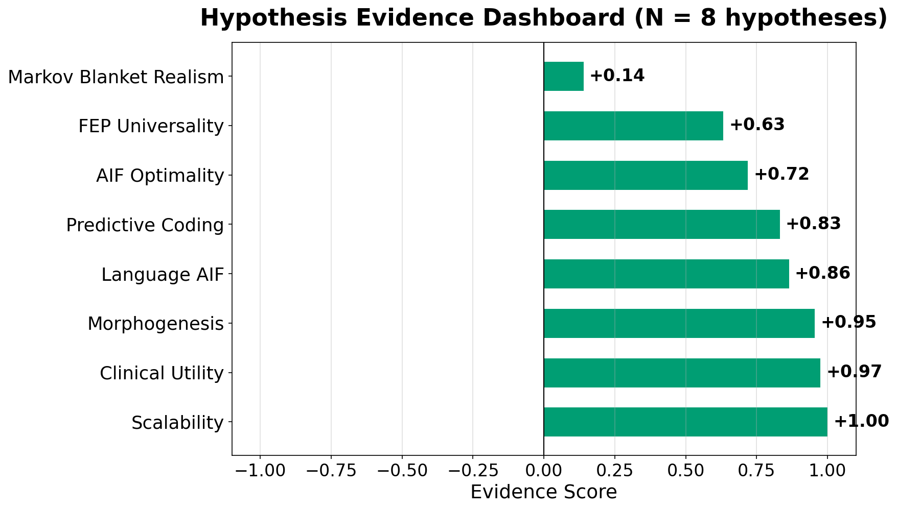
4.1.1 Interpretation of Evidence Profiles
To directly address our core research questions—identifying which claims are robustly supported and which remain contested—we evaluated how the hypothesis-level evidence maps against the critiques introduced in \(\ref{sec:methods}\). The score ordering is data-derived and should be read as a relative evidence map, not as a set of absolute scientific-certainty tiers. The highest observed score is Scalability (SCALABILITY) at \(+1.00\), while 8 hypotheses have positive scores and 0 have negative scores in this snapshot. FEP Universality (H1), with 1069 assertions, has the largest assessed evidence base; assertion volume and score magnitude answer different questions. Across hypotheses, citation-weighting captures which claims the community cites most rather than providing a simple ballot of assertion counts; this can amplify highly cited supportive or critical evidence. The complete score and count table is the authoritative comparison, while the dashboard and timeline provide visual summaries.
Markov blanket realism (H3) has 34 assertions, a score of \(+0.14\), and 14 contradicting assertions. Its relatively low positive score is consistent with an active ontological debate between accounts that treat Markov blankets as real thermodynamic boundaries and accounts that treat them as instrumental statistical tools ; a positive tally should not be relabeled as consensus.
FEP universality (H1) generates 1069 assertions yet achieves a score of \(+0.63\). Neutral assessments account for 533 of those tallies, compared with 522 supporting and 14 contradicting assertions. This composition illustrates why a large evidence count does not imply a strongly directional result: many papers invoke the FEP as conceptual scaffolding without explicitly testing universality. The observation is consistent with falsifiability critiques of broad principle-level claims , but remains an interpretation of the extracted abstract-level evidence.
4.1.2 Temporal Dynamics of Evidence Accumulation
The cumulative evidence timeline (Figure \(\ref{fig:evidence_timeline}\)) is descriptive and limited to the observed corpus years. Early years can show extreme scores when only a small number of assertions contribute; the updated figure reports cumulative assertion counts alongside the score encoding. Later trajectories should be interpreted as accumulation patterns rather than causal effects of individual papers, especially for H5 and H6, whose evidence base is concentrated in more recent literature. The timeline does not establish that any hypothesis became positive before the first year represented in this corpus.
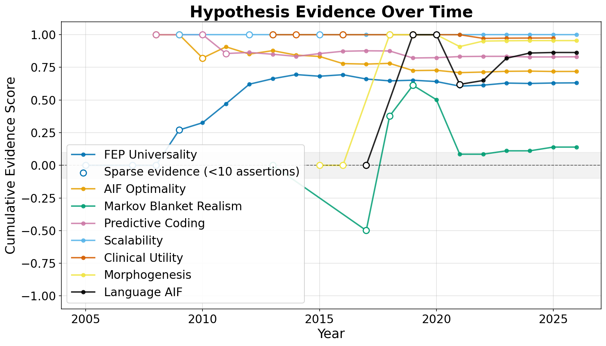
4.1.3 Assertion Composition and Distribution
The per-hypothesis composition of assertions (Figure \(\ref{fig:assertion_breakdown}\)) and the multi-panel summary (Figure \(\ref{fig:assertion_summary}\)) provide complementary views of the extraction results.
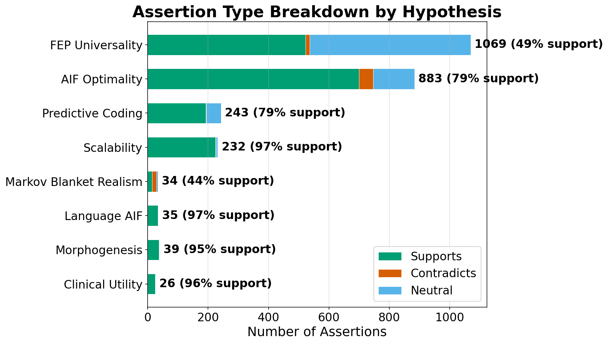
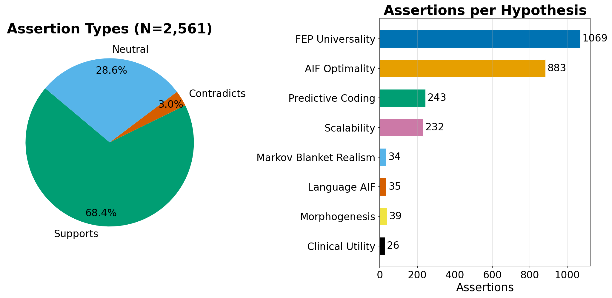
4.1.4 Limitations of the Current Scoring Approach
4.1.4.1 Publication Bias and Linguistic Asymmetry
The mixed scores observed across the eight hypotheses should be interpreted with two systematic caveats.
First, publication bias systematically inflates supporting evidence. Academic journals preferentially publish positive and confirmatory results (), meaning that studies finding null or contradictory outcomes for any hypothesis are less likely to appear in the retrievable literature. This is well-documented across scientific disciplines and is expected to disproportionately suppress contradicting assertions in our extraction pipeline. The Active Inference literature is particularly susceptible: as a theoretical framework with strong foundational proponents, papers are more likely to frame results as consistent with the FEP than as challenges to it.
Second, linguistic asymmetry in academic writing further skews extraction toward positive classifications. Declarative scholarly claims are inherently phrased affirmatively—authors write “our results support,” “consistent with,” or “extends the prediction of” far more frequently than “our results refute” or “contradicts the claim that.” Because the LLM extraction pipeline operates on abstract text, this linguistic imbalance propagates directly into the assertion distribution. Even papers presenting genuinely mixed evidence tend to frame their abstracts in terms of what found rather than what was not, biasing the extracted direction toward ``supports.’’
These two effects act in concert: publication bias reduces the number of contradicting papers in the corpus, and linguistic framing reduces the number of contradicting assertions extracted from the papers that do appear. Consequently, the absolute values of hypothesis scores should not be taken as unbiased measures of scientific consensus. We retain the relative ordering and temporal trajectories as transparent descriptive summaries, but the present study does not establish that they are robust to extraction error, retrieval bias, or correlated evidence.
4.1.5 Methodological Validation and LLM Calibration
The evidence derives from automated LLM-based assertion extraction operating on abstracts only. A stratified rule-based reference-annotator agreement study (\(n = 256\)) provides a first quantitative, fully reproducible calibration: two deterministic keyword-rule protocols agree at \(\kappa = 0.704\) (reference stability), while pipeline triage against the primary rule reference yields precision 0.013, recall 1.000, and F1 0.026, with reference–pipeline direction agreement of only \(\kappa = -0.048\). That the LLM and an independent keyword reference diverge this sharply is itself the calibration result: over-extraction (pipeline labels relevant where the keyword reference labels irrelevant) accounts for 0.738 of sampled rows, directly motivating the tempered interpretation of absolute hypothesis scores. Rankings and temporal trajectories are retained for auditability, not treated as validated estimates. These figures are a reproducibility floor, not accuracy against human ground truth, which remains future work. Full metrics and error taxonomy appear in Table \(\ref{tab:validation_metrics}\) (\(\ref{sec:extraction_pipeline}\)).
4.1.6 Citation-Weighting Sensitivity
Hypothesis ranks under 5 alternative weight policies remain stable in this weighting-only sensitivity check: minimum rank-stability Spearman \(\rho = 0.976\) versus the default log-citation policy, with 2 rank-position changes across all 6 tested policies. 1 hypotheses change sign under at least one tested policy, so sign and tier language remain sensitivity-dependent. The largest policy shifts should be read as a weighting diagnostic rather than as evidence of a different scientific conclusion.
4.2 Field Overview: Disciplinary Structure and Growth Dynamics
Annual output in the Active Inference literature rose from 1 papers in 2003, reaching a peak of 134 papers in 2025—a transition from a niche within theoretical neuroscience to a multi-disciplinary research program spanning three primary domains and eight tracked categories. The corpus start of 2003 was chosen to capture Energy-Based Model and variational Bayesian antecedents that preceded the formal introduction of the Free Energy Principle in 2006 and its subsequent full elaboration . The configured corpus sources are arXiv, Semantic Scholar, and OpenAlex; this snapshot records arXiv, OpenAlex completed; Semantic Scholar incomplete and contains \(N = 1106\) deduplicated papers (2003–2026). It therefore describes the retained retrieval snapshot rather than an exhaustive census (Figure \(\ref{fig:field_summary}\)).
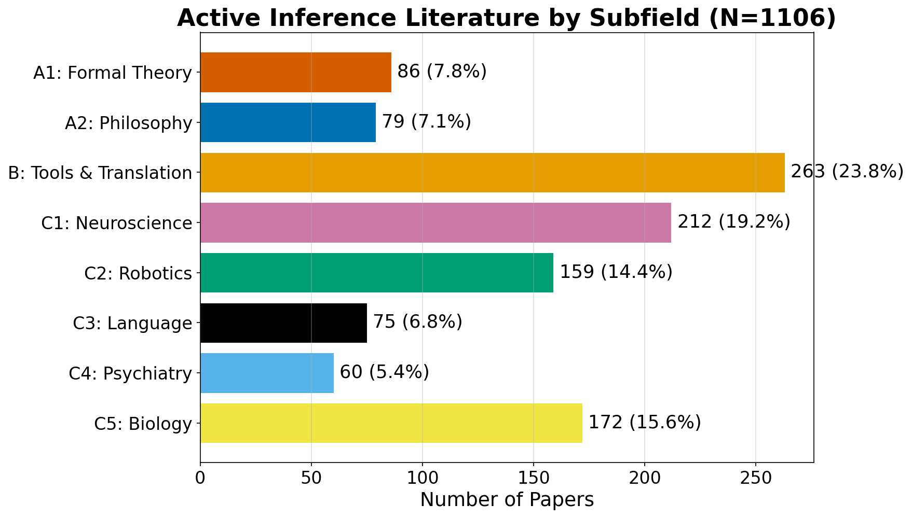
4.2.1 Corpus-Level Summary
The CAGR of 24.94% is measured as the annualised growth rate of yearly publication volume between complete endpoint years 2003 and 2025. The corpus also contains 98 papers from 2026 as of 2026-07-26; this partial-year count is shown separately in the growth figure and is not used as the CAGR endpoint. Citation network metrics are detailed in the dedicated citation network analysis (see ).
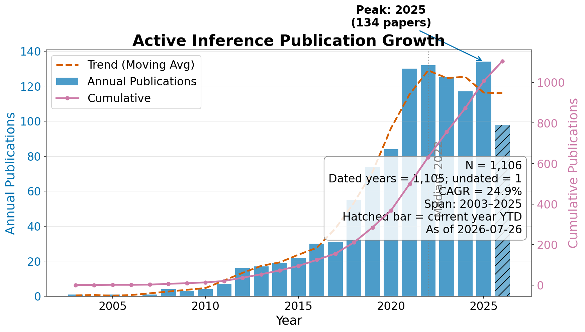
4.2.2 Domain Distribution
Keyword-based classification assigns each paper to one of eight categories across three domains:
The largest single category is B tools; the counts should be read as classifier assignments rather than as measures of disciplinary importance (Figure \(\ref{fig:subfield_distribution}\)). The priority-based classifier routes papers with mathematical indicators (theorems, proofs, equations, statistical formalism) to A1 before falling back to A2, and prefers specific application domains (C1–C5) and tools (B) over both core-theory categories. Papers that discuss FEP/AIF conceptually without mathematical formalism or domain-specific vocabulary are assigned to A2. Embedding-based classification could redistribute some fraction across categories, so the taxonomy is a reproducible map rather than a literal measure of research focus. All eight categories are populated, indicating diversification beyond the field’s neuroscience origins.
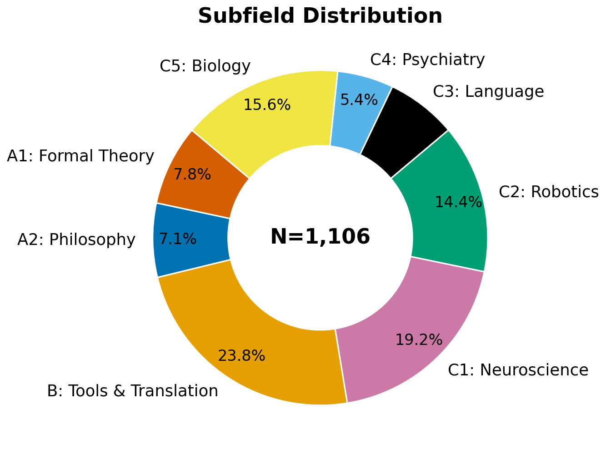
Detailed characterizations of each domain—including historical context, growth trends, and open problems—are provided in the supplementary domain analyses (see ). Latent topic structure, vocabulary analysis, and document embeddings are presented in the text analytics section (see ).
4.2.3 Cross-Domain Comparison
Three structural features emerge from the cross-domain comparison (Figure \(\ref{fig:subfield_timeline}\)). Ranked by corpus share, the domains are Domain C (Applications) (61.3%), Domain B (Tools and Translation) (23.8%), Domain A (Core Theory) (14.9%). Domain C is therefore the largest descriptive tier in this snapshot, while Domain A’s smaller share does not measure its intellectual influence: the mathematical formalisms developed in A1 shape implementations across all domains. The emergent application frontiers (C3–C5) should be interpreted through their temporal trajectories rather than assumed to be uniformly accelerating.
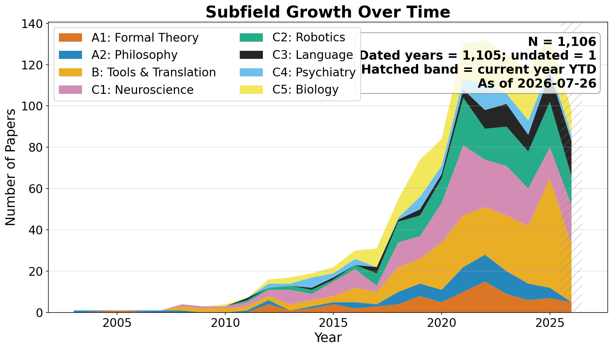
4.3 Domain Analyses: Growth Trajectories and Open Problems
This supplementary section provides detailed characterizations of each of the eight tracked Active Inference domains, organized under three tiers: A (Core Theory), B (Tools & Translation), and C (Application Domains).
4.3.1 Domain A: Core Theory
4.3.1.1 A1 — Quantitative and Formal Theory (n = 86, 7.8 percent)
The A1 domain develops the mathematical foundations underpinning the Free Energy Principle: information geometry, category-theoretic formulations of Markov blankets, path integral formulations of free energy minimization, and gauge-theoretic perspectives on self-organization. A central debate concerns the ontological status of Markov blankets—whether they correspond to real physical boundaries or are merely useful statistical constructs . Bruineberg et al. draw a critical distinction between Pearl blankets (instrumental, epistemic tools for conditional independence in Bayesian networks) and Friston blankets (ontologically laden physical boundaries between agent and environment), arguing that the scientific credibility of the former should not be extended uncritically to the latter. Friston and collaborators continue to address this critique through the development of Bayesian mechanics , which aims to place the FEP on firmer mathematical footing by grounding Markov blanket dynamics in the physics of belief-based systems. Our hypothesis scoring quantifies this debate: the Markov blanket realism hypothesis (H3) achieves a score of \(+0.14\) with 14 contradicting assertions, indicating a contested evidence profile rather than resolving the ontological question. Recent theoretical consolidation has strengthened the formal tools available to A1: variational message passing formulations connect expected free energy decomposition—into risk, ambiguity, epistemic, and instrumental components—to practical planning algorithms, advancing the theoretical justification for EFE-based policy selection. Path integral formulations now connect Markov blanket dynamics to least-action principles, framing free energy minimization as paths of least action for belief updating. With 86 papers (7.8% of the corpus), A1 captures a meaningful share of formal work, reflecting the improved classifier’s ability to route papers with mathematical formalism (theorems, proofs, convergence, posterior distributions, Fokker–Planck equations) into this domain rather than the qualitative philosophy catch-all. Key evidence gap: A mathematically formal distinction yielding testable predictions that differentiate systems actively minimizing an internal free energy functional from systems that merely possess a Markov blanket.
4.3.1.2 A2 — Qualitative Philosophy and General Theory (n = 79, 7.1 percent)
The A2 domain encompasses papers that develop, extend, or review the core Free Energy Principle and Active Inference framework without restricting attention to a specific application domain. This includes Friston’s foundational work on variational free energy minimization , the textbook treatment by Parr, Pezzulo, and Friston , and numerous tutorial and review papers. The priority-based classifier mitigates over-assignment to A2 by routing papers with mathematical formalism to A1 and papers with domain-specific vocabulary to C1–C5 or B before the A2 catch-all is reached. Nevertheless, the count likely still conceals meaningful internal structure: papers addressing embodied cognition, Bayesian brain theory, and philosophical implications of the FEP are all subsumed under this heading.
Three unresolved debates drive the most contested A2 literature. First, the explanatory scope question: is the FEP a principle of physics (applying to any system at non-equilibrium steady state ), a principle of biology (restricted to organisms that actively maintain their boundaries against entropy), or a computational-level description of cognition ? The answer determines whether evidence from robotics, synthetic biology, or cellular dynamics counts as genuine support for the FEP or merely analogical illustration. Second, the relationship to reinforcement learning: active inference and deep RL both minimize expected future cost, but differ in whether the objective is expected free energy (AIF) or expected cumulative reward (RL). Establishing formal equivalence or principled divergence between these frameworks is prerequisite for the benchmark comparisons domain B requires. Third, eliminativist vs. instrumentalist interpretations of free energy itself—whether variational free energy is a latent quantity the brain actually tracks or a mathematical convenience for describing inference—remain open, with consequences for the empirical status of A1 formalisms. Key evidence gap: A head-to-head theoretical comparison showing conditions under which active inference makes predictions that differ from reinforcement learning, optimal control, or Bayesian brain models, together with experimental designs capable of adjudicating among them.
4.3.2 Domain B: Tools and Translation Methods
4.3.2.1 B — Algorithms, Scaling, and Software (n = 263, 23.8 percent)
Domain B addresses the computational challenge of making active inference practical in complex, high-dimensional environments. Early implementations relied on small discrete state spaces amenable to exact message passing. Recent work has introduced deep active inference using neural networks to amortize inference , Monte Carlo tree search for planning , hybrid architectures combining model-based planning with model-free components, and interpretable alternatives such as Free Energy Projective Simulation (FEPS) , which exposes decision logic as human-readable policy graphs. The central open question is whether active inference agents can match deep reinforcement learning performance on standard benchmarks while retaining interpretability and sample efficiency. The availability of the pymdp library has lowered implementation barriers, contributing to this domain’s growth. The recent establishment of the Pymdp Fellowship program (funding 8 open-source developers in 2025) and the release of real-time stream processing tools like RxInfer.jl v4.0.0 indicate a vibrant and maturing software ecosystem. Key evidence gap: Head-to-head benchmarking of AIF agents against state-of-the-art deep RL baselines on standardized, continuous-control or long-horizon environments.
4.3.3 Domain C: Application Domains
4.3.3.1 C1 — Neuroscience (n = 212, 19.2 percent)
Neuroscience represents the historical core of the Active Inference research program. The predictive processing account—in which cortical hierarchies minimize prediction errors through both perceptual inference and active sampling—remains one of the most empirically tested aspects of the framework . The broader neuroscience literature on Dynamic Causal Modeling and predictive coding is extensive; the relatively modest count here likely reflects the keyword classifier’s inability to distinguish neuroscience-specific applications from general FEP theory. Bridging the gap between computational models and empirical neuroimaging data remains the domain’s primary challenge.
4.3.3.2 C2 — Robotics (n = 159, 14.4 percent)
Robotics applications treat embodied agents as free energy minimizing systems that unify perception and action through proprioceptive and exteroceptive prediction errors . Applications include robotic arm control, mobile navigation, manipulation, and multi-robot coordination. Active inference offers roboticists a principled framework for integrating sensory processing, motor planning, and adaptive behavior without separate perception and control modules. Key challenges include real-time computational feasibility on embedded hardware, continuous high-dimensional action spaces, and sim-to-real transfer.
4.3.3.3 C3 — Language Processing (n = 75, 6.8 percent)
The C3 domain conceptualizes linguistic processes—speech perception, sentence comprehension, dialogue, and reading—as active inference operating over deep hierarchical generative models of linguistic structure . Active inference models of reading have reproduced saccadic eye-movement patterns, while models of speech perception capture how listeners integrate prior expectations with acoustic evidence. Recent work couples active inference to large language models, pragmatics, and multi-agent communication. The connection between AIF and LLMs runs in both directions: Wen proposes that AIF can replace external reward signals in LLM-based agents, while Friston et al. demonstrate how active inference enables artificial reasoning through structure learning via Bayesian Model Reduction. The language domain is also where AIF shows strong results through novel discrete generative models for structured sequential tasks .
4.3.3.4 C4 — Computational Psychiatry (n = 60, 5.4 percent)
Computational psychiatry leverages active inference to model psychiatric conditions as disruptions in belief updating, precision weighting, or prior rigidity . Schizophrenia has been modeled as impaired precision weighting on bottom-up prediction errors; depression as over-precise negative priors; and autism spectrum conditions as atypical precision allocation over sensory channels. Beyond clinical psychopathology, the framework is now being extended to model higher-order cognition: Whyte et al. propose a metacognitive active inference account of imaginative experience, in which “inner screen” representations emerge from EFE-driven attention allocation under FEP constraints—connecting computational psychiatry to consciousness research. The domain continues to expand, with emerging frameworks integrating psychodynamic theory (e.g., self-identity formation via embodied interactions) with predictive processing to unify environmental and biological factors underlying stress disorders. Translating these computational models into diagnostic markers and therapeutic protocols remains an ongoing challenge. Key evidence gap: Translating retrodictive computational phenotyping models into prospective clinical predictions that demonstrably outperform standard diagnostic criteria in clinical trials.
4.3.3.5 C5 — Biology and Morphogenesis (n = 172, 15.6 percent)
The C5 domain applies active inference and the FEP to biological systems beyond the brain: cellular behavior, morphogenesis, evolutionary dynamics, and the origins of life. Morphogenetic processes have been modeled as collective active inference, where groups of cells coordinate to minimize a shared free energy functional . Recent empirical work has validated collective AIF at larger scales: Heins et al. demonstrated that surprise minimization alone produces realistic collective motion patterns, providing a principled alternative to ad hoc flocking rules. The FEP’s reach now extends beyond biological organisms into engineered systems: Nazemi et al. apply active inference to smart building energy control under partial observability and privacy constraints, demonstrating that the free energy framework can govern resource allocation in cyber-physical systems. With 172 papers, C5 reflects growing interest in extending the FEP to encompass all self-organizing systems—living and artificial—though the ratio of theoretical proposals to empirical validation remains high.
4.3.4 Comparative Synthesis
Taken together, the three domains reveal a field transitioning from a focused neuroscience program to a broad interdisciplinary framework. Domain C is the largest descriptive tier in this snapshot, Domain B pursues engineering viability through scalable algorithms and software, and Domain A provides the theoretical and mathematical substrate. Domain C tests the framework’s generality across neuroscience (C1), robotics (C2), language (C3), psychiatry (C4), and biology (C5). The consistent pattern across applied domains—strong theoretical motivation paired with limited empirical validation—suggests that the field’s next growth phase will depend on accumulating experimental evidence.
In direct response to RQ1 (How is the Active Inference field structured?), the domain taxonomy reveals an asymmetric three-tier architecture: a large application tier (C), a translational layer (B), and a smaller theoretical tier (A) in the retrieved corpus. The keyword classifier can still mask internal diversity within each tier, so the architecture is a reproducible classification map rather than a claim about scientific importance.
4.3.4.1 Domain–Hypothesis Cross-Reference
Each domain has a primary hypothesis linkage (see the detailed hypothesis evidence analysis in the ):
The evidence directions summarized above are elaborated quantitatively—with citation-weighted scores, temporal trends, and three-tier evidence profiling—in the .
4.3.5 Text Analytics: Topic Modeling, Vocabulary Structure, and Document Embeddings
This section examines the latent semantic structure of the Active Inference corpus through complementary text-analytic methods: non-negative matrix factorization for topic discovery, TF-IDF vocabulary analysis, document embedding projections, and term co-occurrence patterns. Together, these analyses reveal thematic structure that cuts across the keyword-based domain taxonomy presented in the .
4.3.6 Topic Modeling: Latent Structure
Non-negative matrix factorization (NMF) applied to the TF-IDF matrix identifies 8 latent topics:
4.3.6.1 Topic–Domain Overlap
The topic descriptors are partially orthogonal to the domain taxonomy, providing an exploratory view of cross-cutting vocabulary rather than a replacement for the supervised keyword categories. Across the configured alternate random seeds, the mean top-term-set Jaccard similarity is 0.545 (minimum 0.407). This is a stability diagnostic for the exploratory decomposition, not evidence that the topics are globally unique or optimal. The absence of retrieval noise should likewise be interpreted as a property of this query and corpus, not as a proof of exhaustive relevance filtering (Figure \(\ref{fig:topic_term_bars}\)).
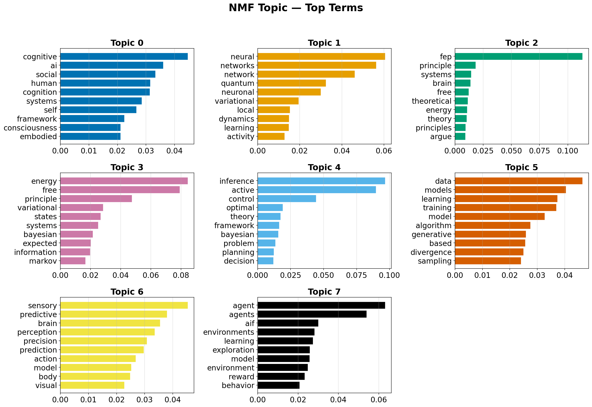
4.3.7 Vocabulary Analysis
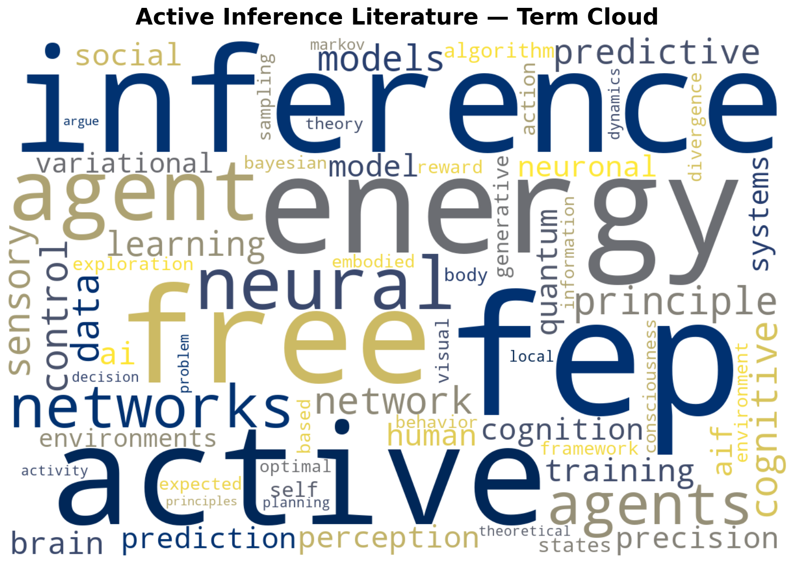
The word cloud (Figure \(\ref{fig:word_cloud}\)) reveals the conceptual core of the Active Inference literature: terms related to the Free Energy Principle (“inference,” “active,” “free energy,” “model,” “bayesian”) dominate, while application-specific terms appear at smaller scales, reflecting the domain distribution’s heavy A2 concentration.
4.3.8 Document Embedding Projections
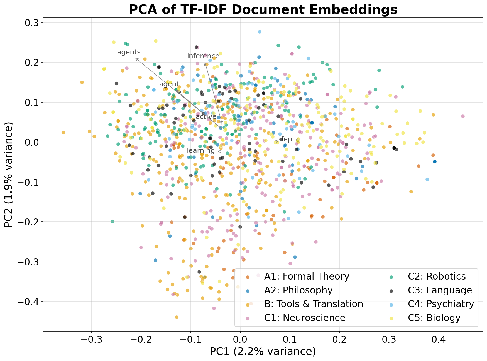
Principal Component Analysis of the TF-IDF document-term matrix projects each paper into a two-dimensional space that preserves the directions of maximum variance (Figure \(\ref{fig:pca_embeddings}\)). Rather than serving solely as a visual clustering aid, this projection provides a quantitative measure of semantic distance between subfields. The scatter plot, colored by domain assignment, reveals the degree of semantic separation between domains. Loading arrows overlay the top-variance terms, showing which vocabulary drives the principal components and highlighting the structural overlap between theoretically similar domains that keyword-based hard categorization obscures.
4.3.9 Domain Semantic Similarity
To further interrogate the latent semantic structure of the subfields, we extract the top characterizing terms for each domain and compute a hierarchical clustering of domain centroids. The heatmap (Figure \(\ref{fig:term_heatmap}\)) reveals distinctive vocabulary patterns beyond mere keyword-level classification, while the dendrogram (Figure \(\ref{fig:dendrogram}\)) confirms the tight semantic proximity between Core Theory subfields (A1, A2) and the close pairing of Tooling (B) with Biology (C5).
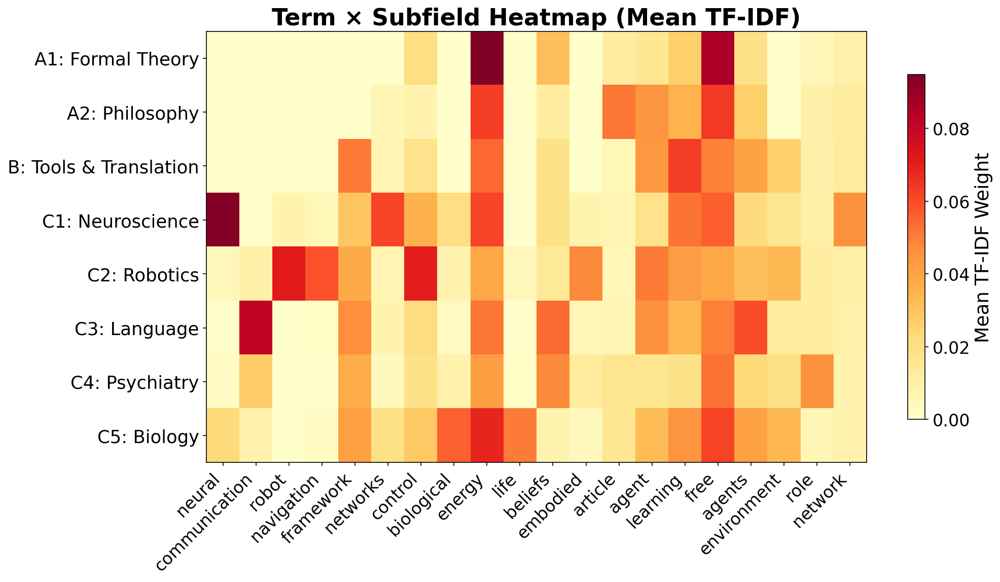
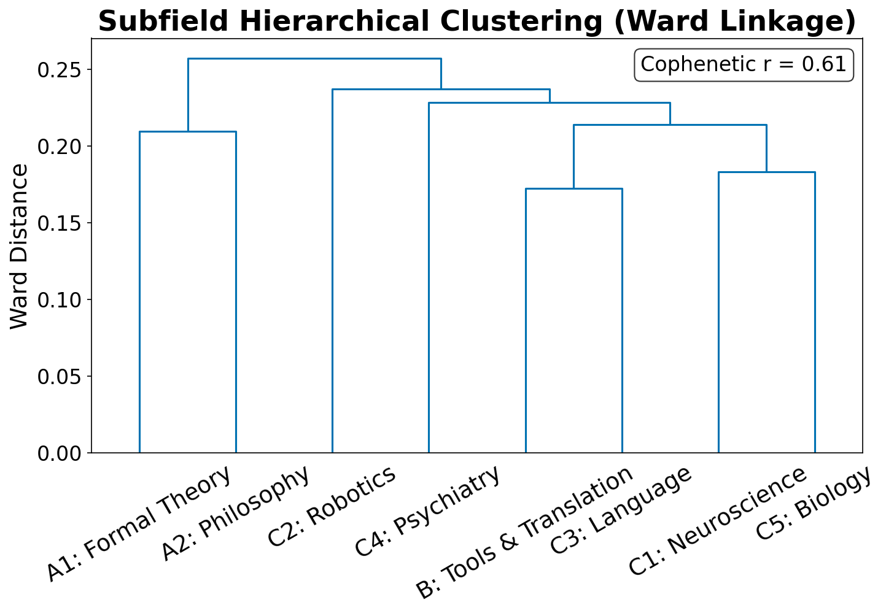
4.3.10 Term Co-occurrence Patterns
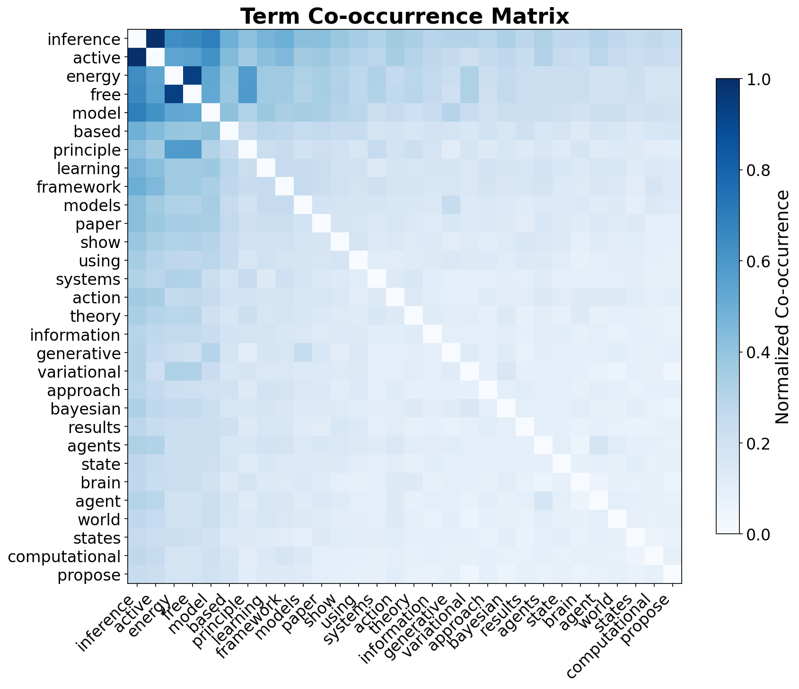
The co-occurrence matrix (Figure \(\ref{fig:cooccurrence_matrix}\)) for the 30 most frequent corpus terms reveals tightly coupled term clusters corresponding to the NMF topics. The strong co-occurrence between “free,” “energy,” “principle,” and “bayesian” anchors the theoretical core, while application-specific term clusters (e.g., “brain”–“cognitive”–“predictive”–“coding”) form distinct off-diagonal blocks. The relative isolation of robotics-specific terms from neuroscience terms confirms the semantic separation between these application domains despite their shared theoretical foundation.
4.4 Citation Network Topology
The intra-corpus citation network provides a structural view of how Active Inference research is organized, identifying influential hub papers, community structure, and patterns of citation isolation (Figure \(\ref{fig:citation_network}\)).
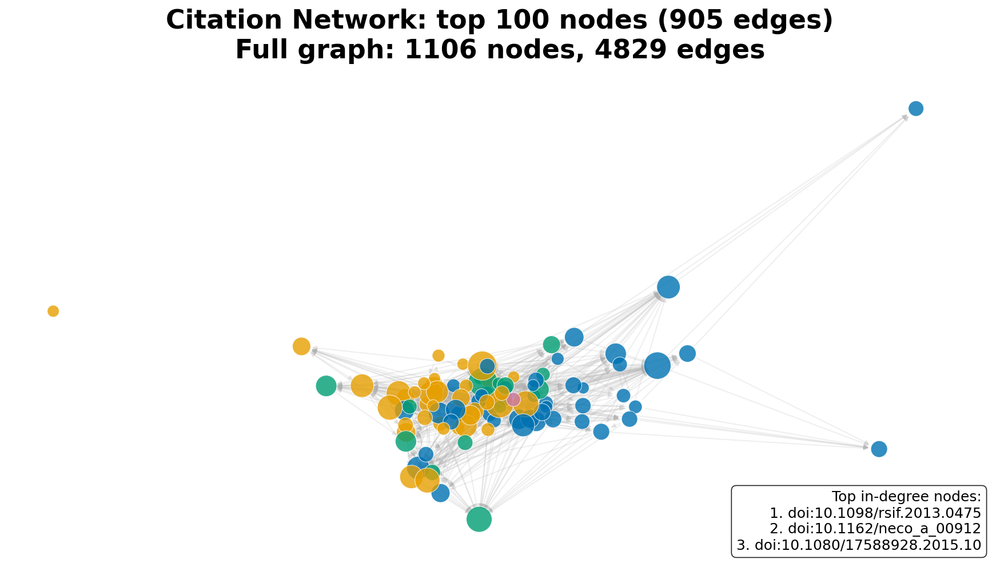
4.4.1 Network Density and Degree Distribution
The intra-corpus citation network contains 1106 nodes and 4,829 edges, with a density of 0.40% and 645 connected components. The average in-degree of approximately 4.4 indicates that most papers receive few intra-corpus citations, consistent with the field’s rapid expansion: the majority of recent papers have not yet accumulated citations within the corpus (Figure \(\ref{fig:degree_distribution}\)). Only 10.4% of all identified references (4,829 intra-corpus matches out of 46,598 total reference entries) resolve to other papers within the corpus, reflecting cross-source identifier mismatches and the field’s engagement with a broad external literature base. Community detection identifies clusters via greedy modularity maximization .
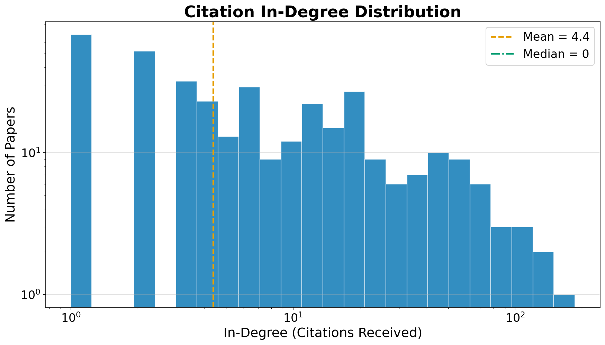
4.4.2 Connected Components and Citation Isolation
The high number of connected components (645 out of 1106 nodes) reveals that much of the corpus consists of citation-isolated papers—works that neither cite nor are cited by other papers in the collection. A single Giant Connected Component (GCC) typically dominates mature scientific networks; here, with 645 components across 1106 nodes, the GCC contains a minority of nodes while the remainder form singletons or small clusters of two to three papers. This is partially an artifact of cross-source identifier mismatches, but it also reflects the field’s pattern of papers engaging with the FEP literature conceptually without building explicit, graph-tractable citation chains. PageRank analysis identifies highly influential papers, predominantly Friston’s foundational work and the AIF textbook , which serve as nexus points linking otherwise disconnected subgraphs.
4.4.3 Network Summary
The citation topology corroborates the field overview findings (RQ1, RQ2): a small number of foundational papers—predominantly Friston’s free energy and active inference formulations—anchor a rapidly expanding periphery of increasingly specialized work. The extremely low density (0.40%) corresponds to an epistemic stage of high fragmentation, meaning that literature synthesis and cross-pollination between specific sub-domains remain difficult. Theoretical influence flows primarily through shared conceptual foundations (the hub nodes) rather than through dense mutual citation across the periphery. As metadata standardization improves and DOI adoption becomes universal across preprint and journal ecosystems, re-running this pipeline should yield substantially higher reference resolution rates and a more connected graph, enabling finer-grained community detection and tracking.
5 Conclusion: Evidence Landscape, Methodological Limitations, and Research Agenda
5.1 Summary
This work demonstrates a first-generation prototype infrastructure for citation-weighted evidence mapping and hypothesis triage across a rapidly growing scientific field. By combining configured multi-source retrieval (\(N = 1106\) papers, inclusion from 2000 onward; arXiv, OpenAlex completed; Semantic Scholar incomplete), LLM-based assertion extraction encoded as provenance-bearing nanopublications, and citation-weighted triage scoring, we produce a queryable, RDF-compatible knowledge graph that maps the evolving evidence landscape for eight core Active Inference claims. The system demonstrates the feasibility of automated living reviews, while clearly delineating the boundaries of current model capabilities.
All assertions and hypothesis scores are machine-generated; outputs always report evidence mapping and triage, not scientific confirmation—there is no live gate that suppresses or changes output based on the validation metrics below, which are reported as reproducibility context, not an enforced pass/fail threshold. A stratified rule-based reference-annotator agreement study (\(n = 256\)) yields inter-rule \(\kappa = 0.704\) and pipeline precision 0.013, recall 1.000 against a deterministic keyword-rule reference; direction agreement between that reference and the pipeline is only \(\kappa = -0.048\). These are reproducibility signals, not accuracy against human labels—the pre-declared human gold-standard baseline below has not yet been collected.
5.2 Constraints and Methodological Scope
Several conscious design constraints scope these findings.
5.2.1 Keyword Classifier Resolution
The keyword-based classifier operates over 200+ keyword indicators distributed across 8 domain categories (74 mathematical indicators in A1 alone), using a deterministic priority system that routes papers to specific application domains (C1–C5) before testing tools (B), formal theory (A1), and the qualitative philosophy catch-all (A2). Word-boundary-aware matching reduces partial-match false positives, but keyword-based methods cannot capture semantic nuance: papers using novel terminology or discussing cross-domain topics without standard vocabulary risk misclassification. Residual A2 concentration should be interpreted as a ceiling on broad theoretical generality rather than a literal measure of philosophical focus. An embedding-based classifier trained on a labeled subset would provide a quantitative upper bound on the fraction of A2 papers that merit redistribution.
5.2.2 Citation Network Coverage Gaps
The 4,829 intra-corpus edges spanning 645 connected components provide a topological skeleton, but three systematic gaps inflate the component count: (1) cross-source identifier mismatches (DOI vs. OpenAlex vs. arXiv ID), (2) papers whose references are not indexed by any source API, and (3) open-access preprints whose DOIs differ from their published versions. Exhaustive DOI-level cross-matching with fuzzy title matching would condense the graph further.
5.2.3 Corpus Biases, Citation Dynamics, and Linguistic Framing
Citation counts are subject to Matthew effects and cumulative field-size biases. Partial-year indexing for the most recent calendar year undercounts recent publications. The measured 24.94% CAGR is calculated over complete years 2003–2025, while 98 papers from 2026 are reported as of 2026-07-26 and excluded from that endpoint. Additionally, the retrieved corpus itself suffers from selection biases inherent to queried databases, including English-language dominance and the structural over-indexing of preprints relative to peer-reviewed final versions. Finally, positive and negative hypothesis scores alike are affected by publication bias and linguistic asymmetry: declarative scholarly claims are phrased affirmatively more often than negatively. Relative rankings and temporal trajectories are retained for transparent comparison, but their robustness is not established by this abstract-only calibration.
5.2.4 LLM Extraction Fidelity, Domain Drift, and Robustness
Zero-shot LLM extraction introduces distinct systematic biases: over-extraction (the model hallucinating certainty for claims the paper merely mentions in passing) and direction inversion (misclassifying opposing evidence as supporting). Recent benchmarking confirms that state-of-the-art systems often fall short of production-level precision on tasks requiring exhaustive retrieval and aggregation of directional claims from long documents . Furthermore, because our corpus extends to 2026, LLM extraction is vulnerable to domain drift—the base models may lack parametric knowledge of the most recent theoretical developments. As an alternative, fine-tuned models specifically trained on FEP/AIF abstracts could yield higher precision than our zero-shot approach, though at a steeper computational setup cost.
The current validation protocol is a deterministic rule-based reference study, not a human-annotation ground truth. It provides a reproducibility floor through inter-rule agreement and pipeline-versus-reference metrics; a future human-labeled study is required before making accuracy claims.
5.3 Research Agenda: Four Priority Next Steps
The current prototype establishes a reproducible baseline and surfaces the field’s evidence structure at corpus scale. Four concrete next steps, ordered by the dependency chain each one unlocks, define the path from prototype to production-grade living review.
5.3.1 Next Step 1 — Expand the Scope of Referenced Data
The present corpus of \(N = 1106\) papers is assembled via keyword queries against the configured APIs (Semantic Scholar, OpenAlex, arXiv); this snapshot records arXiv, OpenAlex completed; Semantic Scholar incomplete. Three expansion axes would materially change the evidence landscape.
Additional sources. PubMed, PsycINFO, and IEEE
Xplore each index Active Inference literature that the current APIs do
not reach: neuroscience clinical trials (PubMed), cognitive-behavioral
studies (PsycINFO), and robotics control architectures (IEEE). For each
new source, the retrieval layer requires only a source-specific
connector implementing the same
fetch_papers(query, max_results) interface used by existing
adapters. Gray literature—technical reports, theses, and institutional
preprints not yet indexed by major APIs—represents an additional tier:
harvesting from ORCID work records and institutional repositories would
capture practitioner findings that never appear in indexed venues.
Broader query coverage. The current query set is derived from the eight hypothesis keywords and their immediate synonyms. Expanding to a full ontological synonym set (e.g., mapping “variational inference,” “surprise minimization,” and “Helmholtz machine” as equivalent retrieval terms for FEP-related claims) would reduce the retrieval false-negative rate for papers that use non-canonical vocabulary. A systematic evaluation of retrieval precision and recall against a hand-curated gold-standard set of 100 known AIF papers would quantify the gap.
Custom curated bibliographies. Domain experts can
contribute citation lists directly to the corpus without modifying any
code: placing a .bib or .ris file in
data/custom_bibliographies/ triggers the deduplication
merge on the next pipeline run. This pathway is the lowest-friction
route to extending scope for researchers who maintain personal reference
libraries.
5.3.2 Next Step 2 — Extract and Verify Evidence Supporting Claims in Each Paper
The current extraction pipeline operates exclusively on abstracts. Abstracts contain the claims authors choose to foreground, not necessarily the claims best supported by the paper’s data. Three mechanisms bridge this gap.
Full-text ingestion. For the subset of papers with
open-access PDFs (approximately 60–70% of recent AIF preprints on
arXiv), Stage 3 can be extended to parse full-text sections—specifically
Methods, Results, and Discussion—using a structured chunking strategy
that splits documents into ~512-token segments aligned to section
boundaries. The existing nanopublication schema accommodates a
source_section field (currently unused) that would record
the provenance of each extracted assertion (abstract vs. results
vs. discussion), enabling downstream stratification of evidence by
rhetorical function.
Claim-evidence pairing. The current extraction prompt asks the LLM to classify a paper’s stance toward a hypothesis but does not require it to quote the specific sentence or data point that justifies the classification. A revised prompt would require the model to (a) identify the hypothesis-relevant passage verbatim, (b) classify the stance, and (c) rate confidence on the basis of whether the passage reports an empirical measurement, a theoretical derivation, or an assertion without quantitative support. This three-field extraction — , , — upgrades the nanopublication from a classification label to a traceable evidential pointer. For H3 (Markov Blanket Realism), where the 14 contradicting assertions drive a contested score, reviewers could then inspect the actual quoted passages rather than trusting the LLM classification in isolation.
Human spot-check coverage. The planned 10% manual-annotation baseline would focus on inter-rater agreement; this manual validation has not yet been performed. Extending spot-checks to verify that the extracted evidence quote actually appears in the source document (a verbatim-match check) adds an additional fidelity gate beyond stance accuracy.
5.3.3 Next Step 3 — Tie Hypotheses to Real-World Outcomes
The eight tracked hypotheses are formulated at the level of theoretical constructs (e.g., “the FEP provides a universal account of self-organizing systems”). Practical applicability requires mapping from hypothesis support to observable real-world outcomes, distinguishing which claims are actionable from which remain theoretical scaffolding.
Outcome taxonomy. Each hypothesis should be annotated with a set of outcome indicators: specific, measurable real-world results whose observation would constitute evidence for or against the hypothesis under the closest empirical operationalization. For example: - H4 (Predictive Coding): outcome indicator = reduction in prediction-error amplitude as measured by ERP N400 or oscillatory gamma-band response in human neuroimaging studies. - H5 (Scalability): outcome indicator = task performance on standard RL benchmarks (Atari, MuJoCo, ProcGen) at or above the performance of model-free SOTA at matched computational budgets. - H6 (Clinical Utility): outcome indicator = statistically significant improvement on standardized psychiatric assessment scales (PANSS, BDI-II, PTSD Checklist) in at least one registered clinical trial. - H7 (Morphogenesis): outcome indicator = quantitative recapitulation of at least one morphogenetic patterning sequence (e.g., digit formation timecourse, limb bud size scaling) in a computational model governed by FEP dynamics rather than reaction-diffusion equations.
For each hypothesis, the extraction pipeline can be extended to tag
assertions whose evidence type is empirical_measurement and
whose outcome aligns with these indicators, producing a filtered score
that counts only outcome-linked evidence. This outcome-filtered
score sits alongside the current citation-weighted score in the
hypothesis table, providing a direct answer to “how much of this support
is grounded in real-world observations rather than theoretical
commentary?”
Application domain cross-walk. The subfield classification (A1–C5) already partitions the corpus by application domain. Intersecting hypothesis scores with application domain membership—computing \(\text{score}(H_i, D_j)\) for each hypothesis \(H_i\) and domain \(D_j\)—would reveal which domains are generating empirical traction versus theoretical citation counts. H1 (FEP Universality) likely has high A2 (philosophy) support and lower C1–C5 empirical support; quantifying this split would replace qualitative description of the “neutral plurality” with a decomposed evidence profile grounded in domain labels already computed by Stage 2.
5.3.4 Next Step 4 — Formal Evaluation Rubric for Pipeline Quality
The current validation is primarily structural: do scripts run, do outputs exist, do tests pass, does the PDF render? A formal evaluation rubric answers a different question: how accurate is the evidence landscape this system produces? Four rubric dimensions, together with their measurement protocols and target thresholds, define what “good enough for a published living review” means.
The four rubric dimensions map directly to the four next steps: corpus recall measures Step 1 progress, evidence-quote fidelity measures Step 2 progress, outcome grounding rate measures Step 3 progress, and extraction direction accuracy is the targeted baseline to be established as the other three improve. Reporting all four numbers alongside hypothesis scores in each pipeline release converts a qualitative description of limitations into a versioned, trackable quality scorecard. This transforms the current “we acknowledge limitations” posture into an audit trail: readers can see whether the rubric scores improved between release v1.0 and v2.0, and reviewers can evaluate pipeline trustworthiness on principled criteria rather than subjective judgement.
5.4 Future Directions: Beyond Tally-Based Evidence Aggregation
Beyond the four priority next steps above, the scoring machinery itself can be upgraded. We identify four directions, ordered by expected impact.
5.4.1 Hierarchical Bayesian Hypothesis Scoring
The most direct extension replaces the additive tally with a hierarchical Bayesian model that treats each hypothesis score as a latent variable inferred from noisy assertion observations. Under this formulation, each assertion \(a_i\) contributes a likelihood term \(P(a_i | \theta_H, \sigma)\) parameterized by the hypothesis-level evidence strength \(\theta_H\) and an observation noise term \(\sigma\) capturing LLM extraction uncertainty. A hierarchical prior \(\theta_H \sim \mathcal{N}(\mu_{\text{field}}, \tau^2)\) pools information across hypotheses, enabling principled shrinkage for hypotheses with sparse evidence (e.g., H6 Clinical Utility, with only 26 assertions). This framework produces posterior credible intervals rather than point estimates, providing uncertainty quantification that the current tally-based scores lack. Temporal dynamics can be modeled through time-varying parameters \(\theta_H(t)\) using state-space formulations that re-weight older evidence rather than treating all cumulative assertions equally.
5.4.2 Causal Evidence Graphs
A second-generation knowledge graph would encode not only assertion-level relationships (paper → supports → hypothesis) but also causal dependencies among hypotheses themselves. For example, evidence for predictive coding (H4) often implicitly supports FEP universality (H1), yet the tally-based approach treats them as independent. A causal evidence graph—structured as a directed acyclic graph (DAG) over hypotheses with edge weights learned from co-assertion patterns—would enable cross-hypothesis evidence propagation using belief propagation or variational message passing. This is particularly relevant for the Active Inference literature, where hypotheses are theoretically nested: FEP universality (H1) logically entails predictive coding (H4), and Markov blanket realism (H3) is a prerequisite for certain formulations of H1. Encoding these dependencies would prevent the double-counting of evidence from papers that support multiple related hypotheses and enable identification of which specific claims drive support for downstream hypotheses. The resulting causal structure itself would be a scientific contribution—a formal map of evidential dependencies within the field’s theoretical architecture.
5.4.3 Evidential Diversity and Source Weighting
The current formula weights assertions by \(\log(1 + \text{citations}) \cdot \text{confidence}\), treating all assertion sources symmetrically. A more nuanced approach would introduce an evidential diversity index that downweights correlated evidence from papers sharing authors, institutions, or methodological approaches. Concretely, assertions could be weighted by the inverse of their similarity to previously counted assertions, measured via cosine similarity of paper embeddings. This would address the observation that H1 (FEP universality) accumulates a large neutral tally partly because many A2 (philosophy) papers invoke the FEP without independently testing it—a form of evidential redundancy that inflates the evidence base without adding independent information. Additionally, assertions could be stratified by evidence type (empirical, theoretical, review) with configurable type-specific weights, enabling users to compute evidence scores that privilege experimental results over theoretical commentary.
5.4.4 Agentic LLM Extractors and Domain Adaptation
Drawing on recent work extending active inference into artificial reasoning and proposing AIF as a reward-free alternative for LLM-based agents , replacing static prompt templates with goal-directed reasoning architectures could significantly improve confidence calibration. As demonstrated by Friston et al. , “active reasoning” enables agents to perform structure learning—determining which causal rule governs a situation by seeking observations that explicitly disambiguate competing hypotheses about world models. Applied to literature extraction, analogous uncertainty-aware reasoning could treat each paper as a structured observation to be parsed against hypothesis definitions via an optimal experimental design rubric—directly operationalizing Next Step 2’s claim-evidence pairing at scale. The framework is domain-agnostic by design; adaptation to foundation models, quantum computing, or synthetic biology requires only domain-specific hypothesis definitions and keyword lists within the A/B/C taxonomy. The broader convergence between AIF and deep learning demonstrated by AXIOM —which plans in object-centric state-spaces—further validates this trajectory. Systematic cross-referencing with the Energy-Based Model research program —including Helmholtz machines , contrastive divergence training , and variational autoencoders —would illuminate shared mathematical structures currently obscured by disciplinary siloing.
5.5 Limitations
Three constraints bound the current findings. First, extraction operates on abstracts only: full-text methods, results, and supplementary data—where quantitative effect sizes and experimental controls live—are not yet parsed. The rubric’s evidence-quote fidelity dimension (Step 4, Table \(\ref{tab:eval_rubric}\)) will quantify exactly how much signal this omission suppresses once a full-text pilot is run. Second, keyword-based retrieval across the configured APIs produces a snapshot with systematic false negatives: papers using non-canonical terminology, gray literature, and domain-adjacent work (EBM, Bayesian brain models) are undercounted. The corpus recall metric provides a principled bound on this gap rather than a vague acknowledgement of it. Third, the citation-weighted tally treats all assertion sources symmetrically; the evidential diversity and outcome-grounding extensions above are the concrete remedies. These are not general disclaimers but tracked deficits against which the Step 1–4 roadmap makes measurable progress.
5.6 Broader Impact
Knight et al. identified three capabilities as goals for the field: “encompass increased scope of relevant works,” “integrate multiple forms of annotation and participation,” and “facilitate integration of manual and artificial contributions.” The four-step research agenda in §\(\ref{sec:next_steps}\) operationalizes each of these directly: Step 1 addresses scope, Step 2 addresses the quality of extracted contributions, Step 3 addresses empirical grounding, and Step 4 provides the formal rubric that makes “integration of manual and artificial contributions” verifiable rather than aspirational.
By demonstrating that LLM-driven assertion extraction can produce scalable, queryable representations of scientific evidence—processing \(N = 1106\) papers spanning approximately two and a half decades (2003–2026), extracting structured assertions, and evaluating 8 core hypotheses—this work provides a reusable architecture for realizing this vision. The corpus window begins in 2003 to capture Energy-Based Model and variational Bayesian antecedents that predate the Free Energy Principle label itself; the formal FEP was introduced in 2006 and reached its core elaboration by 2010 . The citation network metrics (4,829 edges, 0.40% density, mean in-degree 4.4) characterize the field’s structure, which has grown at a 24.94% CAGR while diversifying across the 8 configured domains.
The limitations of keyword-based retrieval across disjoint academic repositories mean that any retrieved corpus will contain both false positives and false negatives. There is no single threshold that perfectly defines inclusion or exclusion for a dynamic, interdisciplinary research field. The primary contribution of this work is therefore not a definitive corpus but an open-source, modularly updatable, and versioned software package. This tool is built in reference to custom literature bibliographies that can be iteratively curated for relevance by the community.
The combination of multi-source retrieval, LLM-based extraction, and probabilistic knowledge graph construction provides a reusable template that advances each of these goals. A complementary pathway is emerging through Retrieval-Augmented Generation (RAG) architectures that ground LLMs directly in knowledge graphs, reducing hallucination and enabling real-time, context-aware reasoning over structured evidence . Integrating our nanopublication graph into such a RAG system would enable natural-language querying of the evidence base, further lowering the barrier for community engagement. The recent release of nanopub-js v0.1.0 —enabling browser-based creation, signing, and querying of nanopublications—lowers the barrier for community-contributed assertions, bringing the participatory evidence curation envisioned by Knight et al. within practical reach. As LLM capabilities improve and standardized metadata adoption grows, the cost of maintaining such systems will decrease while their utility increases. By open-sourcing the pipeline and publishing the schema, we provide both a concrete tool for the Active Inference community and a modular blueprint that other fields can adapt and refine.
Data and code availability. The pipeline source code, configuration, and manuscript templates are available in the project repository (see in or the manuscript front matter). Nanopublications are persisted as JSON Lines (for incremental runs) and RDF/TriG (nanopub.net-compliant); both can be archived with the code release or on a data repository (e.g., Zenodo) for citation and long-term access.
Community recommendations, actionable implications, and open questions arising from this work are detailed in the .
6 Discussion: Implications and Community Recommendations
6.1 Relationship to Prior Development Directions
Knight, Cordes, and Friedman identified six development directions for systematic Active Inference literature analysis: (1) increased scope of relevant works, (2) richer annotation schemes, (3) integration of manual and artificial contributions, (4) transferable approaches across fields, (5) participation by diverse contributors, and (6) updated analyses tracking the field’s evolution. This pipeline directly addresses directions 1, 2, 3, and 6: it configures retrieval across three databases, replaces manual annotation with LLM-driven extraction while preserving human review pathways, and produces a pipeline designed for incremental re-execution as new literature appears. The current snapshot records source completion explicitly; directions 4 and 5—cross-field transferability and community participation—remain open and are addressed below.
6.2 Tactical and Strategic Priorities
6.2.1 Adopt Rigorous Reporting Metadata
Papers should systematically report DOIs, ORCIDs, and explicit hypothesis commitments. Submitted preprints should forward-link to their published versions to prevent fragmented citation subgraphs. Our extraction pipeline prioritizes the DOI as the canonical identifier; failing that, deduplication cascades to arXiv IDs, Semantic Scholar IDs, and OpenAlex IDs. Broad DOI adoption would resolve the cross-source mismatch problem, enabling higher-resolution evidence mapping.
6.2.2 Explore Open Knowledge Graph Infrastructure
We encourage the exploration of federated nanopublication server architectures to house community-contributed assertions. This would enable a continuously updated living literature review that incorporates new findings as they are published. The release of nanopub-js v0.1.0 makes browser-based creation and querying of nanopublications practical, enabling researchers to contribute assertions directly from web interfaces. Integrating this approach with the Active Inference Institute’s Knowledge-Engineering infrastructure could provide the standardized semantic vocabulary necessary for rigorous cross-study comparison.
6.2.3 Standardize the Ontological Lexicon
Immediate future extraction cycles should align assertion predicates with the formally curated Active Inference Ontology. Enforcing shared ontological primitives across studies will accelerate the aggregation of evidence from otherwise siloed research communities, advancing the interoperability goal outlined by Knight et al. .
6.3 Empirical and Theoretical Imperatives
6.3.1 Architect Unified Performance Benchmarks
The computational tools domain (B) lacks standardized performance benchmarks for direct comparison against deep reinforcement learning architectures. Establishing baseline metrics analogous to standard RL environments (e.g., OpenAI Gym) is a prerequisite for transitioning theoretical proposals into applied systems.
6.3.2 Prioritize Empirical Validation
Biology (C5) and Language (C3) have established theoretical frameworks but limited empirical validation. Targeted experiments designed to test specific FEP-derived predictions—such as demonstrating morphogenesis as Bayesian inference or measuring active inference advantages in language tasks—would strengthen the evidence base beyond what further theoretical work alone can achieve.
6.4 Living Review Maintenance
The pipeline is designed for continuous operation rather than one-time analysis. Incremental resume capabilities (checkpoint-based assertion extraction, merge-on-add corpus deduplication) enable periodic re-execution as new papers are indexed. We envision a maintenance cycle in which the pipeline is re-run quarterly, with updated hypothesis scores and field statistics published alongside the pipeline release. Community contributors can extend the framework by adding custom hypothesis definitions, alternative keyword taxonomies, or domain-specific extraction prompts—all configurable via the YAML configuration file without modifying source code. A complementary long-term trajectory is toward RAG-enabled access: integrating the nanopublication knowledge graph into a Retrieval-Augmented Generation architecture would enable natural-language querying of the evidence base, making quantitative literature synthesis accessible to researchers without programming expertise.
6.4.1 Agentic Workspaces and MCP Integration
Beyond traditional open-source maintenance, the repository is
architected as an intrinsically agentic workspace. Every underlying
source module (e.g., src/knowledge_graph/,
src/visualization/) is governed by dedicated
SKILL.md files serving as Model Context Protocol (MCP)
prompt-boundaries. These explicitly define the “rules of engagement” for
autonomous AI inference agents—such as enforcing the zero-mock testing
philosophy via local HTTP proxies, handling specific LLM fallback
parsing logic, and respecting headless rendering constraints. This
design ensures that future AI orchestrators can natively interface with,
scale, and refine the computational meta-analysis pipeline safely and
deterministically without structural micromanagement.
6.4.2 The Discovery Engine and Future Architectures
Broadening our synthesis of knowledge graphs and LLMs, future iterations of this pipeline may interface with architectures like the Discovery Engine . This comprehensive framework is designed to overcome the limitations of the document-centric publishing paradigm by transforming unstructured scientific literature into a machine-operable “world model.” Their approach uses systematic, self-consistent LLM distillation to extract typed “knowledge artifacts” from publications, which are sequentially assembled into a hierarchical Conceptual Nexus Model (CNM) graph and encoded as a high-dimensional Conceptual Nexus Tensor. By explicitly modeling experimental variables, causal relations, and evidential contradictions within a FAIR-aligned representation, this architecture enables AI agents to mathematically navigate the knowledge landscape, trace provenance, and generate novel hypotheses through operations akin to tensor factorization and Vector Symbolic Architectures (VSA). This shift from static digital libraries to a computable, relation-rich evidence graph deeply parallels our objective of translating unstructured Active Inference literature into a quantifiable assertion tracking system.
6.5 Open Questions
This meta-analysis surfaces four empirically testable questions whose answers would directly advance the four-step research agenda outlined in \(\ref{sec:next_steps}\).
Recency bias in citation weighting (Methodological limitation). The citation-weighting function \(w(a) = \log(1+\text{citations}) \cdot \text{confidence}\) systematically underweights recent papers (2024–2026) which have few citations. A 2024 paper with 1 citation is weighted approximately 0.69versus a 2015 paper with 100 citations at approximately 4.6. Future work may explore time-decay normalization to mitigate this recency penalty.
Domain classifier over-assignment to A2 (Philosophy). The keyword-based domain classifier tends to over-assign papers to the broad A2 (philosophy) category, where FEP universality is implicitly invoked but rarely explicitly tested. This classification bias likely inflates H1’s neutral evidence count and should be addressed in future work through embedding-based classification or expert annotation.
Classifier calibration (feeds Step 1). What proportion of A1 (Formal Theory) papers would be reclassified under an embedding-based or expert-annotated scheme, and how does this affect the field’s theoretical core? An embedding-classifier trained on a 200-paper labeled set and evaluated on held-out A1 vs. A2 examples would quantify the fraction of “philosophy” papers that carry formal mathematical content, directly sharpening both retrieval scope and outcome-grounding rate.
Falsifiability and explicit testing (feeds Step 3). H1 (FEP Universality) produces a predominantly neutral evidence profile, consistent with the critique that FEP accommodates any behavior without generating distinctive predictions . Can hypothesis definitions—and author reporting standards—be reformulated to require a formal, refutable empirical prediction before contributing a supporting assertion? The proposed outcome-indicator taxonomy (§\(\ref{sec:next_steps}\)) would operationalize this: only assertions paired with a measurable outcome indicator would count as empirical support, converting the neutral H1 tally into a decomposed “invoked vs. tested” breakdown.
The Scalability Gap (feeds Step 3). H5 (AIF Scalability) shows a strong positive trend, yet head-to-head comparisons with deep RL remain concentrated on a narrow set of benchmarks (predominantly low-dimensional discrete environments). Beyond what state-space dimensionality and reward density does the expected-free-energy exploration advantage of model-based AIF degrade relative to model-free architectures such as SAC or PPO? Answering this requires assembling the outcome-indicator-tagged evidence (Step 3) and identifying which benchmark comparisons are already in the literature versus which are genuinely absent.
Evidence Cross-Pollination (feeds Step 1 + Step 4). To what extent do mathematical structures underlying variational free energy minimization and energy function optimization in Energy-Based Models (VAEs, contrastive divergence) converge? Extending the corpus to include EBM literature (Step 1) and running the assertion extractor on the merged set would produce a cross-domain hypothesis score for the shared-architecture claim—a direct test of convergence rather than a theoretical argument. The rubric’s corpus recall metric (Step 4) would validate whether the expanded retrieval actually captures the EBM literature at recall \(\geq 0.85\).
6.6 Pipeline as a Community Instrument
The four next steps are not a private development roadmap—they are an invitation. The repository is structured so that each step can be contributed incrementally: a new source connector (Step 1), a revised extraction prompt with evidence-quote fields (Step 2), a YAML file defining outcome indicators per hypothesis (Step 3), and an annotation script that computes rubric scores against a provided gold set (Step 4). None of these require modifying the scoring engine or the knowledge graph schema. By publishing the rubric thresholds alongside the current baseline scores, this work makes explicit what it would take for a community contributor to demonstrably improve the system—and provides the tooling to verify that improvement without relying on subjective assessment.
6.7 Limitations
Recency bias: The citation-weighting function \(w(a) = \log(1+\text{citations})\cdot\text{confidence}\) systematically underweights recent papers (2024–2026) which have few citations. A 2024 paper with 1 citation is weighted \(\sim0.69\times\) versus a 2015 paper with 100 citations at \(\sim4.6\times\). Future work may explore time-decay normalization.
Classifier bias: The assertion counts are also sensitive to corpus composition: H1’s large neutral tally (533) partially reflects the keyword classifier’s tendency to assign papers to the broad A2 (philosophy) category, where FEP universality is implicitly invoked but rarely explicitly tested. This classifier bias likely inflates H1’s neutral classification count and should be addressed in future work.
7 Appendix: Tooling and Infrastructure
The practical utility of a computational meta-analysis depends on robust tooling at each pipeline stage: assertion extraction, modeling and simulation, knowledge-graph infrastructure, and quality assurance. This appendix surveys the source-backed ecosystem of Active Inference (AIF) and Free Energy Principle (FEP) implementations as of 2026-07-26, documents the engineering trade-offs behind our knowledge-graph backend, and lists the multi-level quality gates enforced by the pipeline.
7.1 LLM-Based Assertion Extraction
Extracting structured assertions from unstructured text is the most labor-intensive component of knowledge-graph construction. Manual annotation produces high-quality results but does not scale to corpora of thousands of papers—a constraint demonstrated by Knight et al. , whose systematic analysis of FEP and Active Inference publications required manual coding of structural, visual, and mathematical features for hundreds of annotated papers. We implement a hybrid approach: an LLM performs initial extraction and human review provides validation pathways.
Our extraction pipeline deploys a locally hosted LLM through Ollama . Each paper’s abstract is assessed against the eight hypothesis definitions in a structured prompt requesting a JSON array of assessments. Unlike keyword matching, which detects only topical terms, the LLM evaluates the semantic relationship between a paper’s claims and each hypothesis. Papers critiquing the FEP correctly receive “contradicts” assessments for FEP Universality (H1), while methodology tutorials receive “neutral” assessments reflecting their pedagogical character. Detailed prompt engineering, schemas, and failure modes are documented in the .
7.2 Software Ecosystem
The Active Inference community has developed a rapidly growing
ecosystem of implementations spanning multiple programming languages,
inference paradigms, and application domains. This section provides a
dated, source-traceable inventory of implementations and associated
paper-only source records. We emphasize entries with traceable papers,
preprint identifiers, or official project sources: source traceability
is a prerequisite for reproducibility and community-driven validation,
but does not by itself establish adoption, comparative performance, or a
permissive software license. The registry and exclusion policy are
maintained in doc/tooling_inventory.yaml; entries without a
traceable primary source are not counted in the publication-facing
table. The dated public-source probe for this snapshot is complete (3/18
rows fully verified; 15 flagged with explicit source notes) as of
2026-07-26 across 18 retained rows. It records repository reachability,
license metadata, release/version information, and recent activity for
every retained row; 3 rows have source-only evidence and 15 rows carry
explicit limitations. Row-level flags remain visible for stale
repositories, source-only papers/sites, restricted licenses, and missing
license files; no such row is presented as a fully verified maintained
software distribution.
7.2.1 General-Purpose Frameworks
The source-backed general-purpose inventory covers discrete, continuous, and real-time inference:
pymdp. The pymdp library provides a Python implementation of active inference for discrete state-space POMDPs, supporting message passing on factor graphs, policy inference via expected free energy, and hierarchical generative models.
SPM. The SPM package (Wellcome Centre for Human Neuroimaging) includes MATLAB implementations of Dynamic Causal Modeling and variational Bayesian inference under the FEP. It remains the reference implementation for neuroimaging applications and houses the original Friston-group POMDP scripts.
RxInfer.jl. RxInfer is a Julia package for reactive message-passing-based Bayesian inference, supporting real-time and streaming inference suitable for robotics and online learning . The dated source audit records its current release/version and license metadata; the audit report, rather than a hard-coded prose version, is authoritative for this living inventory. The RxInfer ecosystem includes tutorials covering Bayesian linear regression, hidden Markov models, Kalman filtering, Gaussian process regression, hierarchical Gaussian filters, nonlinear sensor fusion, and active inference mountain car control, available at the official documentation and the Learnable Loop tutorial portal.
ActiveInference.jl. In parallel to RxInfer’s
generalized message-passing focus, ActiveInference.jl provides a
Julia-native, near drop-in conceptual analogue to Python’s
pymdp . It explicitly targets computational psychiatry and
cognitive neuroscience workflows emphasizing standard discrete-state
POMDP simulation, parameter estimation, and recovery. The library
leverages Julia’s array semantics—utilizing vectors of arrays to
efficiently encode multimodal factorized models via the canonical \(\mathbf{A}, \mathbf{B}, \mathbf{C}, \mathbf{D},
\mathbf{E}\) components—to streamline tasks such as generating
synthetic behavioral data, fitting models to subject behavior, and
probing internal beliefs via robust simulation loops
(infer_states!, infer_policies!,
sample_action!).
Cpp-AIF. The Cpp-AIF header-only C++ library implements active inference for discrete POMDPs with multicore parallelization of the most demanding computational kernels—multidimensional inner products for expected free energy computation and state estimation. By abstracting the mathematical details behind a high-level API, Cpp-AIF targets embedded systems and performance-critical applications where Python overhead is prohibitive.
FEPS. Free Energy Projective Simulation combines active inference with interpretable graphical policy representations, enabling agents to plan via expected free energy while exposing decision logic as human-readable policy graphs. FEPS targets interpretable reinforcement learning tasks where black-box deep agents are undesirable—behavioral biology, clinical decision support, and safety-critical robotics.
7.2.2 Deep Active Inference
Scaling active inference beyond tabular POMDPs to high-dimensional observation spaces requires neural-network function approximators. A growing body of deep active inference implementations explores this direction:
The foundational deep AIF agent of Fountas et al. introduced Monte-Carlo tree search over learned latent spaces, achieving non-trivial Atari performance. Millidge’s DeepActiveInference extended this to continuous control with backpropagation-based world models . Champion’s Branching-Time Active Inference (BTAI_3MF) and its deep variant (Deep_BTAI_3MF) implement tree-structured planning under the free-energy objective, scaling active inference to partially observable environments with multi-step lookahead . Most recently, AXIOM achieves competitive Gameworld-10k benchmark performance using expanding object-centric world models, learning in minutes rather than hours—a landmark result for scalability.
7.2.3 Predictive Coding and Neural Generative Coding
Predictive coding provides the core computational mechanism linking active inference to neuroscience. Several implementations offer accessible entry points:
Predictive Coding and Backpropagation. Millidge et al. demonstrate that predictive-coding networks can approximately implement backpropagation along arbitrary computational graphs , providing a biologically plausible alternative to gradient descent. The PredictiveCodingBackprop repository provides the reference implementation.
7.2.4 Benchmarking Progress
The scalability gap between AIF and deep reinforcement learning has been a central limitation of the tools domain. Recent work demonstrates significant progress on two fronts. First, AXIOM outperforms state-of-the-art model-based deep RL agents including DreamerV3 on the Gameworld-10k benchmark while using substantially smaller model sizes; its object-centric scene decomposition enables sample-efficient learning from structured representations rather than raw-pixel memorization. Second, variational message-passing formulations connect EFE decomposition—into risk, ambiguity, epistemic (information-seeking), and instrumental (goal-reaching) components—to practical planning algorithms, advancing the theoretical justification for EFE-based policy selection (H2). Separately, Friston et al. introduce structure learning via Bayesian Model Reduction as a principled approach to artificial reasoning under active inference.
7.2.5 Source-backed Tool Survey
The following table catalogs the principal source-backed Active Inference implementations surveyed, organized by functional category. For each entry we list the primary language, application domain, and associated publication or repository. The table is intended as a navigational resource for researchers seeking implementations or traceable source records relevant to specific hypotheses (H1–H8) or application domains (A1–C5). External verification status is reported separately so the table does not convert a citation into a maintenance or license claim.
7.2.6 Comparative Feature Matrix
The complementary strengths across these packages reflect a fragmented ecosystem. The table is descriptive rather than a market-share or adoption estimate: it shows a mixture of Python, Julia, MATLAB, and C++ implementations across discrete, continuous, deep, and domain-specific use cases. The variational-free-energy foundations shared by Active Inference and Energy-Based Models—including Helmholtz machines , Boltzmann machines , and variational autoencoders —suggest a potential interoperability pathway with mainstream deep generative-modeling frameworks, but no comparative performance claim is made here.
7.3 Knowledge Graph Infrastructure
Our knowledge graph uses an RDF-compatible schema deployable on standard semantic-web infrastructure. The nanopublication model provides a principled atomic unit of scientific evidence: each nanopublication packages a single assertion (e.g., “Paper X supports Hypothesis Y”) with explicit provenance and publication metadata in four named RDF graphs (Head, Assertion, Provenance, Publication Info). This structure satisfies the FAIR data principles by design: nanopublications are Findable via URI-based identification, Accessible through standard RDF protocols, Interoperable via W3C-standard TriG serialization, and Reusable with explicit provenance and CC0 licensing. The full RDF schema and a TriG serialization example are presented in the and Appendix \(\ref{sec:appendix_rdf}\).
The engineering trade-offs among the three deployment options are straightforward:
Nanopublication servers provide decentralized, content-addressed storage. The pipeline writes nanopublications in two forms: JSON Lines (for incremental checkpointing and tooling) and RDF/TriG per the nanopublication standard (Assertion, Provenance, Publication Info), suitable for the nanopublication network and FAIR deployment. The recent release of nanopub-js v0.1.0 —a JavaScript library enabling browser-based creation, signing, and querying of nanopublications—opens the possibility of community-contributed assertions directly from web interfaces, lowering the barrier to participatory evidence curation. Future integration with Trusty URIs would provide cryptographic content verification and persistent identifiers for each nanopublication.
RDF stores (e.g., Apache Jena Fuseki, Blazegraph, Oxigraph) enable SPARQL queries such as “find all papers supporting hypothesis \(H\) published after 2020 in the neuroscience domain (C1).” The cost is operational overhead and query latency.
Property-graph databases (e.g., Neo4j) prioritize traversal performance for path queries and community detection, at the expense of semantic-web compatibility.
While RDF and property graphs excel at structurally organizing assertions, it is crucial to recognize that they inherently compress the rich epistemic context of the original papers (e.g., methodological caveats, sample sizes, scope limitations) into flattened confidence scores—a fundamental limitation of current automated knowledge extraction discussed in the .
The Active Inference Ontology namespace ensures integration with external ontologies and linked-data resources.
7.4 Multi-Level Quality Assurance
Quality assurance operates at four levels: assertion-level confidence and review, graph-level structural consistency, score-level boundary tests, and pipeline-level continuous-integration coverage.
7.4.1 Assertion-Level Validation
Assertions below a configurable confidence threshold (default 0.6) are flagged for review. The threshold is chosen to balance recall against the prompt-engineering cost of pushing the LLM to over-commit; lowering it inflates noisy neutral assertions, raising it discards weakly supported but legitimate claims. There is no live per-assertion multi-annotator mechanism; instead, an offline stratified sample is checked against a deterministic rule-based reference (see the extraction-agreement study in the main methods section)—a reproducibility floor, not human inter-annotator agreement.
7.4.2 Graph-Level Consistency Checks
Consistency checks verify that all nodes link to valid targets and no orphan nodes exist. Coverage metrics track the proportion of annotated papers, the fraction of references that resolve inside the corpus, and the per-domain assertion density.
7.4.3 Score-Level Unit Testing
Hypothesis scoring is validated through unit tests on synthetic data verifying boundary conditions: all-support fixtures must produce scores at \(+1\), all-contradict at \(-1\), and balanced inputs at \(0\). Sensitivity analysis sweeps over confidence thresholds and citation-weighting schemes to measure, rather than assume, qualitative rank stability; the current weighting-only snapshot shows high but non-perfect agreement and remains a diagnostic rather than validation of the underlying evidence.
7.4.4 Pipeline-Level Test Coverage
Test-driven development enforces 90% minimum code coverage on project modules and 60% on shared infrastructure, with real data and computation (no mocking). All tests run on every push; failures block merges and releases.
7.4.5 Quality Thresholds
The hypothesis-evidence results, temporal dynamics of evidence accumulation, and assertion analysis are presented in the .
8 Appendix: Mathematical and Algorithmic Details
This appendix collects the formal mathematical definitions, derivations, and algorithmic specifications referenced from the main methodology section. Each subsection is self-contained; equations are labelled for cross-referencing from the body and from \(\ref{tab:notation_symbols}\).
8.1 Citation-Weighted Hypothesis Scoring Formula
For each hypothesis \(H\), we compute a citation-weighted evidence score aggregating all assertions relevant to \(H\):
\[\begin{equation} \score(H) = \frac{\sum_{a \in S(H)} w(a) - \sum_{a \in C(H)} w(a)}{\sum_{a \in A(H)} w(a)} \label{eq:app_score} \end{equation}\]
where \(S(H)\) is the set of supporting assertions, \(C(H)\) the set of contradicting assertions, \(A(H)\) all assertions for \(H\) (including neutral), and the weight function is
\[\begin{equation} w(a) = \log(1 + \text{citations}(a)) \cdot \text{confidence}(a). \label{eq:app_weight} \end{equation}\]
The logarithmic citation weighting assigns higher weight to papers that have accumulated more citations within the retrieved corpus window. This measures published attention and visibility in the literature graph—not truth, popularity on social media, field size alone, or citation-network centrality (PageRank is not used). We report sensitivity analyses under uniform weighting, confidence-only, raw citation (popularity stress test), age discount, and field-normalized cohort weighting; rank-stability Spearman \(\rho = 0.976\) versus the default policy. The score lies in \([-1, 1]\): values indicate citation-weighted evidence mapping and hypothesis triage within the corpus, not calibrated confirmation of scientific truth.
Temporal aggregation. We additionally compute temporal trends by evaluating the cumulative score at each year \(t\), using only assertions from papers published in year \(\leq t\):
\[\begin{equation} \score(H, t) = \frac{\sum_{a \in S(H,t)} w(a) - \sum_{a \in C(H,t)} w(a)}{\sum_{a \in A(H,t)} w(a)}. \label{eq:app_score_t} \end{equation}\]
This reveals whether support for a hypothesis is growing, declining, or plateauing over time. Cumulative aggregation (rather than yearly windows) is preferred because per-year assertion counts for narrow hypotheses are too sparse for stable point estimates.
Algorithmic specification. The scoring routine is a
pure function of the assertion set; it has no hidden state and is
deterministic given the input. The reference implementation lives in
src/knowledge_graph/hypothesis.py with weight policies in
src/knowledge_graph/hypothesis_weights.py:
function score(H, assertions):
S, C, A_all = 0, 0, 0
for a in assertions where a.hypothesis == H:
w = log(1 + a.citations) * a.confidence
if a.direction == "supports": S += w
elif a.direction == "contradicts": C += w
A_all += w
return (S - C) / A_all if A_all > 0 else 0Boundary tests in tests/test_scoring.py confirm that
all-support fixtures yield \(+1\),
all-contradict fixtures yield \(-1\),
and balanced fixtures yield \(0\)
within numerical tolerance.
8.2 Non-negative Matrix Factorization (NMF) for Topic Modeling
We apply NMF to the TF-IDF matrix of the corpus to discover latent topics. Given the document-term matrix \(V \in \mathbb{R}^{n \times m}_{\geq 0}\), NMF finds factor matrices \(W \in \mathbb{R}^{n \times k}_{\geq 0}\) and \(H \in \mathbb{R}^{k \times m}_{\geq 0}\) such that \(V\) is approximately \(W H\), where \(k = 8\) is the configured number of topics. We use multiplicative update rules :
\[\begin{equation} H \leftarrow H \odot \frac{W^T V}{W^T W H + \epsilon}, \qquad W \leftarrow W \odot \frac{V H^T}{W H H^T + \epsilon}, \label{eq:nmf_update} \end{equation}\]
with \(\epsilon = 10^{-\!10}\) for numerical stability and a fixed random seed of 42 for reproducibility. Across the configured alternate seeds, the mean top-term-set Jaccard similarity is 0.545 and the minimum is 0.407; this is a stability diagnostic, not evidence that the exploratory topics are globally unique or optimal.
Term-Frequency Inverse Document Frequency (TF-IDF). The document-term matrix is constructed using a smoothed TF-IDF weighting . For term \(t\) in document \(d\):
\[\begin{equation} \text{TF-IDF}(t, d) = \text{tf}(t, d) \cdot \left[\log\!\left(\frac{N}{\text{df}(t) + 1}\right) + 1\right], \label{eq:tfidf} \end{equation}\]
where \(\text{tf}(t, d) = \text{count}(t,d) / |d|\) is the normalized term frequency, \(N\) the total number of documents, and \(\text{df}(t)\) the document frequency of term \(t\). The \(+1\) additive smoothing in the denominator prevents division by zero and reduces the weight of extremely rare terms; the outer \(+1\) ensures strictly positive IDF values. Document vectors are L2-normalized before NMF factorization.
8.3 Field Growth-Rate Estimation
The mean year-over-year growth rate \(\bar{g}\) is the arithmetic mean of annual growth rates computed only for years where the prior year had non-zero publications:
\[\begin{equation} \bar{g} = \frac{1}{|Y|} \sum_{y \in Y} \frac{n_y - n_{y-1}}{n_{y-1}}, \label{eq:mean_growth} \end{equation}\]
where \(Y = \{y : n_{y-1} > 0\}\) and \(n_y\) is the number of publications in year \(y\).
The doubling time \(t_d\) is derived from the mean annual growth rate:
\[\begin{equation} t_d = \frac{\ln 2}{\ln(1 + \bar{g})}. \label{eq:doubling_time} \end{equation}\]
The compound annual growth rate (CAGR) over the full span \([y_0, y_T]\) is
\[\begin{equation} \cagr = \left(\frac{n_{\text{cumulative}}(y_T)}{n_{\text{cumulative}}(y_0)}\right)^{1/(y_T - y_0)} - 1. \label{eq:cagr} \end{equation}\]
For the current corpus, \(\cagr = 24.94\%\) over complete years 2003–2025. The observed 2026 count is partial as of 2026-07-26 and is reported separately rather than used as the CAGR endpoint.
8.4 Advanced Visualization Methods
8.4.1 PCA of TF-IDF Embeddings
Principal Component Analysis (PCA) is applied to the TF-IDF matrix \(V\) to project each document into a 2-D space. The projection preserves the directions of maximum variance, enabling visual inspection of document clustering by domain. Loading arrows overlay the top-variance terms onto the scatter plot, showing which vocabulary drives the principal components.
8.4.2 Hierarchical Clustering Dendrogram
For each domain \(s\), we compute the centroid \(\bar{v}_s = \frac{1}{|D_s|} \sum_{d \in D_s} v_d\) where \(D_s\) is the set of documents in domain \(s\) and \(v_d\) is the TF-IDF vector of document \(d\). Ward linkage is applied to the centroid matrix to produce a hierarchical clustering dendrogram showing semantic proximity between domains.
8.4.3 Term Heatmap
For each domain \(s\) and term \(t\), we compute the mean TF-IDF weight \(\bar{w}_{s,t} = \frac{1}{|D_s|} \sum_{d \in D_s} \text{TF-IDF}(t, d)\). The heatmap displays \(\bar{w}_{s,t}\) for the top-\(k\) terms (by global document frequency) across all domains, with cell intensity proportional to mean weight. This reveals distinctive vocabulary patterns that differentiate domains beyond the keyword-level classification used for subfield assignment.
8.4.4 Term Co-occurrence Matrix
The co-occurrence matrix \(C \in \mathbb{R}^{k \times k}\) counts the number of documents in which two terms appear together. For top-\(k\) terms by document frequency, \(C_{ij} = |\{d : t_i \in d \land t_j \in d\}|\). The matrix is normalized to \([0, 1]\) by dividing by the maximum entry and visualized as a symmetric heatmap.
8.5 Nanopublication RDF Schema
Each nanopublication is serialized to RDF/TriG per the nanopublication standard , producing four named graphs. The following annotated example illustrates the structure for a single assertion:
@prefix np: <http://www.nanopub.org/nschema#> .
@prefix prov: <http://www.w3.org/ns/prov#> .
@prefix dc: <http://purl.org/dc/terms/> .
@prefix aif: <http://activeinference.institute/ontology/> .
@prefix xsd: <http://www.w3.org/2001/XMLSchema#> .
# HEAD GRAPH: links nanopub to its three component graphs
<http://activeinference.institute/nanopub/a1b2c3d4e5f6#head> {
<http://activeinference.institute/nanopub/a1b2c3d4e5f6>
a np:Nanopublication ;
np:hasAssertion <...#assertion> ;
np:hasProvenance <...#provenance> ;
np:hasPublicationInfo <...#pubinfo> .
}
# ASSERTION GRAPH: the core scientific claim
<http://activeinference.institute/nanopub/a1b2c3d4e5f6#assertion> {
aif:paper/10.1038_nrn2787 aif:asserts aif:assertion/a1b2c3 .
aif:assertion/a1b2c3
aif:supports aif:hypothesis/fep_universality ;
aif:claim "The paper provides foundational support for FEP as a
unified brain theory."^^xsd:string ;
aif:confidence "0.85"^^xsd:double ;
aif:citationCount "5000"^^xsd:integer .
}
# PROVENANCE GRAPH: extraction lineage
<http://activeinference.institute/nanopub/a1b2c3d4e5f6#provenance> {
aif:assertion/a1b2c3
prov:wasGeneratedBy <http://activeinference.institute/nanopub/a1b2c3d4e5f6> ;
prov:generatedAtTime "2026-01-15T12:00:00+00:00"^^xsd:dateTime ;
prov:wasAttributedTo "act_inf_metaanalysis/gemma3:4b"^^xsd:string ;
prov:hadPrimarySource aif:paper/10.1038_nrn2787 .
}
# PUBLICATION INFO GRAPH: nanopublication metadata
<http://activeinference.institute/nanopub/a1b2c3d4e5f6#pubinfo> {
<http://activeinference.institute/nanopub/a1b2c3d4e5f6>
dc:created "2026-01-15T12:00:00+00:00"^^xsd:dateTime ;
dc:creator "act_inf_metaanalysis/gemma3:4b"^^xsd:string ;
dc:license <https://creativecommons.org/publicdomain/zero/1.0/> .
}8.5.1 Namespace Definitions
| Prefix | URI | Purpose |
|---|---|---|
| np: | Nanopublication schema | Nanopub structural predicates |
| prov: | PROV-O namespace | PROV-O provenance model |
| dc: | Dublin Core terms | Dublin Core metadata |
| aif: | Active Inference ontology | Domain-specific predicates |
| xsd: | XML Schema datatypes | XML Schema datatypes |
8.5.2 Core Triple Patterns
The knowledge graph encodes five fundamental relationships:
9 Appendix: Accessibility, Cognitive Ergonomics, and Participatory Research Infrastructure
Automated meta-analysis tools operate at the intersection of computational infrastructure and human sensemaking. The scalability gains demonstrated by the present pipeline are meaningful only if the resulting knowledge artefacts remain cognitively accessible, ethically transparent, and open to diverse forms of participation. This appendix situates our work within the broader landscape of research accessibility, cognitive ergonomics, decentralized science (DeSci), and participatory infrastructure design, and concludes with a WCAG-mapped checklist that summarizes the concrete accessibility practices implemented in the figure pipeline.
9.1 Cognitive Ergonomics of Knowledge Graphs
The knowledge-graph outputs of this pipeline—hypothesis dashboards, citation networks, temporal evidence trajectories—impose nontrivial cognitive demands on users who must interpret multidimensional evidence landscapes. Cognitive Load Theory establishes that information system designs which exceed working-memory capacity produce disorientation and interpretive errors. Our visualization pipeline addresses this through progressive disclosure (summarized dashboards linking to detailed per-hypothesis breakdowns), consistent visual grammars (a fixed colour palette for supports/contradicts/neutral across all figures), and a minimum font-size floor of 16,pt that satisfies low-vision accessibility guidelines. These are not cosmetic choices but functional requirements for trustworthy scientific communication.
The ResNei (Research Neighbourhood) platform provides a particularly instructive design exemplar for the next generation of cognitive-ergonomic research tools. ResNei is an AI-augmented, neuro-informed research environment that transforms heterogeneous scientific corpora into a living, collaborative knowledge graph structured as modular Conceptual Nexus Models (CNMs). Where our pipeline produces a static (though periodically updated) evidence snapshot, ResNei’s architecture foregrounds dynamic, responsive exploration through three cognitive modes: (tracking a concept’s evolution over time), (surveying related concepts across subfields), and (mapping connections between concepts). This trimodal navigation directly operationalizes the progressive-disclosure principle, enabling users to manage cognitive complexity by choosing their depth of engagement.
9.1.1 Action–Intention UX and Active Inference Design Principles
ResNei’s most theoretically significant contribution is its action–intention UX model, which replaces the conventional passive, attention-maximizing feed with a framework that interprets user actions (uploading papers, highlighting passages, opening concept maps, initiating discussions) as situated signals of research direction. Rather than deploying opaque recommendation engines, the system uses explicit action trajectories to surface contextually appropriate tools and views—an approach that resonates with the perception–action loop central to Active Inference itself . The design principle of ``minimal system intervention, maximum research coherence’’ ensures that the interface scaffolds orientation and affordances without interruptive prompts or aggressive automation. This ethos directly addresses the risk that AI-augmented sensemaking tools inadvertently narrow epistemic horizons through algorithmic filtering.
9.1.2 Risk-Aware and Bias-Transparent Design
ResNei’s solution-design document is notable for its unusually explicit treatment of harms and ameliorations. It identifies exclusion, algorithmic misrepresentation, overconfidence in AI outputs, hidden inequalities, marginalization of less-cited work, surveillance risks, cognitive overload, false comprehensiveness, and data privacy as first-class design constraints . Mitigations include deliberately inclusive UX (designing from the standpoint of those usually excluded), systematic provenance and confidence indicators, framing all AI outputs as suggestions with traceable bases, and configurable metrics beyond citation counts (e.g., conceptual novelty, geographic diversity, publication type). This risk model provides a concrete template for future iterations of our own pipeline, which currently presents citation-weighted scores without UI-level confidence calibration or per-assertion provenance indicators.
9.2 FAIR Data and Decentralized Science
The pipeline’s outputs—nanopublications, knowledge-graph triples, and structured assertion records—are designed to satisfy the FAIR principles (Findable, Accessible, Interoperable, Reusable) articulated by Wilkinson et al. . Each nanopublication carries machine-readable provenance (a canonical source-paper identifier such as a DOI or arXiv ID, extraction model, confidence score, and timestamp), enabling downstream consumers to evaluate evidential quality independently of our aggregation choices. The JSON Lines and RDF/TriG serialization formats support interoperability with existing semantic-web infrastructure.
Decentralized Science (DeSci) represents a broader movement to
dismantle structural barriers in scientific publishing and funding
through blockchain-based governance, tokenized intellectual property,
and community-owned research commons . Our pipeline’s open-source,
modular, and configuration-driven design aligns with DeSci principles:
the entire analytical workflow is reproducible from source code,
hypothesis definitions and extraction prompts are version-controlled in
YAML rather than embedded in proprietary systems, and the
nanopublication output format is natively compatible with federated
semantic publishing networks. ResNei’s architecture further advances
this trajectory by grounding its collaborative features in
social accountability'' andreciprocity, interdependence,
and access’’ as explicit design values , directly addressing the power
asymmetries that traditional centralized publication systems
perpetuate.
9.3 Participatory Research and Universal Access
The aspiration toward participatory research infrastructure—where diverse contributors can meaningfully engage with evidence synthesis regardless of technical expertise—is a recurring theme across the projects discussed here. Bonney et al.’s foundational work on citizen science demonstrated that non-expert participants can make rigorous contributions to scientific knowledge production when provided with appropriate scaffolding, standardized protocols, and feedback loops. Universal Design for Learning principles further emphasize that accessibility is not a specialized accommodation but a design paradigm that improves usability for all users.
Applied to computational meta-analysis, this means designing systems where:
The convergence of ResNei’s neuro-informed collaborative environment, DeSci’s decentralized governance models, FAIR-data interoperability, and citizen-science participation frameworks collectively describes the emerging infrastructure requirements for equitable, cognitively supportive, and community-governed scientific sensemaking. These are not peripheral concerns for computational meta-analysis but architectural prerequisites for systems that aspire to serve as living, trusted evidence ledgers for rapidly evolving scientific fields.
9.4 Pipeline Accessibility Checklist
The following checklist summarizes the concrete accessibility practices implemented in the figure-generation and rendering stages, mapped to the relevant Web Content Accessibility Guidelines (WCAG 2.1, Level AA) success criteria. ``Status’’ is recorded as Implemented, Partial, or Planned based on the current state of the pipeline.
10 Notation, Abbreviations, and Glossary
This appendix consolidates the mathematical notation, abbreviations, hypothesis identifiers, and key terminology used throughout the manuscript. Each table is self-contained and may be consulted independently. Cross-references in the main text use the labels declared here.
10.1 Mathematical Symbols and Notation
The following symbols appear in the methodology, results, and technical appendices. Where a quantity is defined formally, the relevant equation is referenced inline; otherwise the description here is the canonical definition. All probabilities and confidences are real-valued in \([0, 1]\), and all aggregate scores are in \([-1, 1]\).
10.2 Abbreviations and Acronyms Used
The acronyms below appear at least once in the main text, methods, results, or appendices. Domain-specific shorthands such as the A/B/C taxonomy categories (e.g., A1, A2, B, C1–C5) are documented inline at first use in the and the .
10.3 Standard Hypothesis Definitions and Identifiers
The eight hypotheses below define the evaluation rubric used by the LLM-based assertion extractor (). Each hypothesis is anchored to its primary domain in the A/B/C taxonomy, but assertions are extracted from any paper whose abstract relates substantively to the claim. Quantitative results across these hypotheses are reported in the .
10.4 Glossary of Key Terms
The glossary below defines pipeline-specific concepts, statistical methods, and domain terminology referenced in the main text. Software package names appear in typewriter font; mathematical objects use the notation defined above. Where a term has both a colloquial and a technical sense, the technical reading is given.
11 References
The bibliography is generated automatically during PDF compilation
from references.bib. All citation keys used in the
manuscript (e.g., \citep{friston2010free}) resolve to
entries below; unused entries have been pruned. Pandoc’s
--natbib flag injects \usepackage{natbib} and
\bibliographystyle{plainnat}, so neither directive appears
in this section or in preamble.md.